个；把一条1米长的绳子平均分成5份，
（米），每份长
米。
个；把一条1米长的绳子平均分成5份，
（米），每份长
米。如前文所述，数学知识是思想方法的载体，思想方法是数学知识的进一步抽象概括，因而数学思想方法有一个特点，它并不像数学知识技能那样显而易见，往往是隐性的。如一提到小学数学，教师们容易想到数的认识与计算，而数的认识与计算中所包含的丰富的思想方法容易被忽略。再如一提到函数思想，人们更多地认为是中学及大学数学的数学思想，但函数思想在小学数学中可以有很多体现。为了更好地贯彻落实数学思想方法的教学目标，增强教师的思想方法意识、改进教学方法，提高学生的数学素养、思维水平、分析问题和解决问题的能力，对教材中具体什么内容体现什么思想方法进行系统的梳理是必要的。为了教师研究及教学的方便，以各册教材为基本小节单位，分册介绍思想方法。
人民教育出版社课程教材研究所小学数学课程教材研究开发中心根据《标准（2011版）》编著的《义务教育教科书·数学》已经在全国多数地区使用。新教材注重贯彻四基目标，其中数学思想的编排主要体现在两个方面：一是在数与代数、图形与几何、统计与概率、综合与实践这四个领域结合各部分知识体现各种数学思想；二是在每册教材中单独设置“数学广角”单元，利用操作和直观等手段呈现重要的数学思想。
《标准（2011版）》在教材编写建议中要求重要的数学思想要体现螺旋上升的原则。低年级学生受认知水平和数学知识的局限，教材注意利用操作直观等手段让学生感受或初步了解数学思想。在此特别要提醒广大教师的是，教材中的很多数学思想并不是显而易见的，甚至体现得还不够，需要教师去挖掘。同时，广大教师应该更好地理解有关数学思想的理念、落实数学思想的教学目标，尽可能采用《标准（2011版）》中的行为动词来描述数学思想的教学目标。
一年级上册教材主要是让学生能从具体情境中抽象出数量和变化规律，并用符号表示。具体内容和教学目标如下。
（1）从情境和直观图中抽象出数字符号0～9，关系符号“＝”、“＞”、“＜”，运算符号“＋”、“-”等；并理解这些符号的含义。
如图6-1，一年级上册第三单元“1～5的认识和加减法”中的“比大小”的教学。
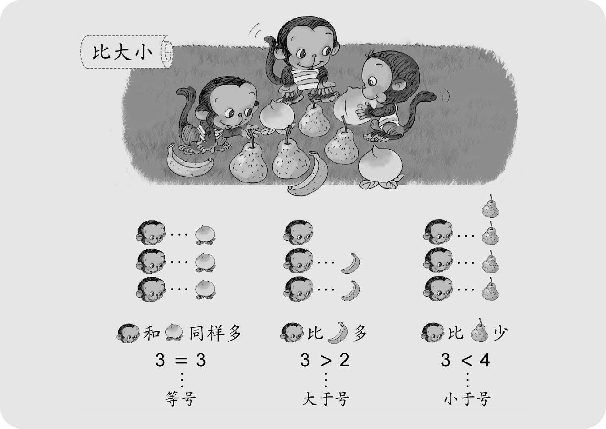
图6-1
情境图中小猴和各种水果是散乱放置的，先进行分类，将同类的东西放在一起，并一一对应竖直排成一列，统计出数量，根据数量的多少来比较数的大小，并引出符号，让学生知道如何用数学符号“＝”“＞”“＜”来表示数之间的大小关系及比较结果。让学生从具体到抽象，经历了符号化的过程，感受符号的简洁。同时，在这里还呈现了简单的象形统计图，让学生感受统计思想和一一对应思想。
（2）结合生活经验、数小棒、计数器等直观操作手段，经历十进制计数原理的抽象过程。
抽象思想存在于数学学习的全过程，虽然一年级的数学知识看起来简单，但实际上也充满了抽象。无论是数的认识还是计算，都离不开抽象的十进制计数原理；时间作为表示物质运动的始终过程或过程中的一点，充满了抽象；几何图形虽然比较直观，但是从物体到图形也是一个抽象的过程。如图6-2，10～20各数的认识，体现了十进制计数原理，10与9相比已有本质不同，10没有采用新的数字符号，10中的1表示一个十；11中的两个1的意义有所不同，一个表示一个十，另一个表示一个一。教师在教学10的认识的时候，往往只关注9加1等于10，10个物体用10表示。而很少让学生思考10的表示与0～9有何不同，缺少对数学抽象的深层次关注。
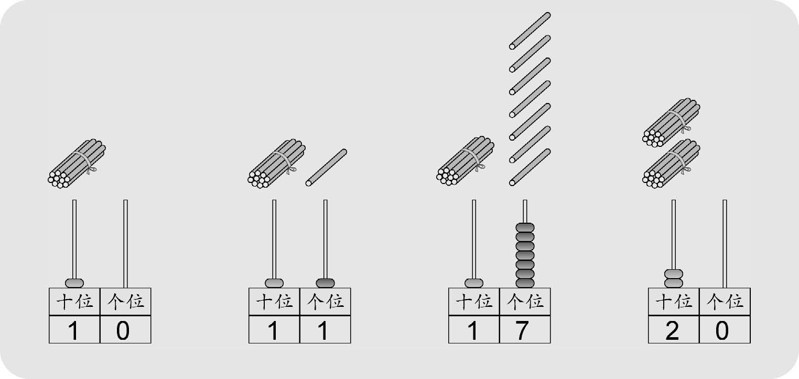
图6-2
分类思想的教学要抓住全面、有序地思考等特点，在低年级也可以渗透，具体内容和教学目标如下。
（1）结合认识物体，让学生感受分类思想。如图6-3所示，给各种形状的物体起个名称，实际上就是按照形状分类。
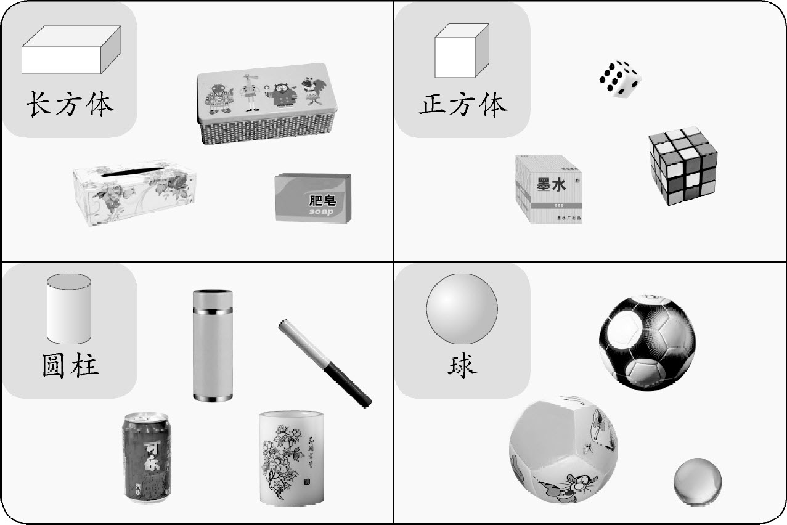
图6-3
（2）结合数的组成，让学生感受分类思想的优势、有条理地思考的优越性。如前文所述，学生在学习6、7的组成时，就可以引导学生思考根据什么标准能够不重复不遗漏地写出每个数的所有组成。如7的组成，既可以按照从小到大，也可以按照从大到小的顺序书写，这样能够做到既快又不重复不遗漏。
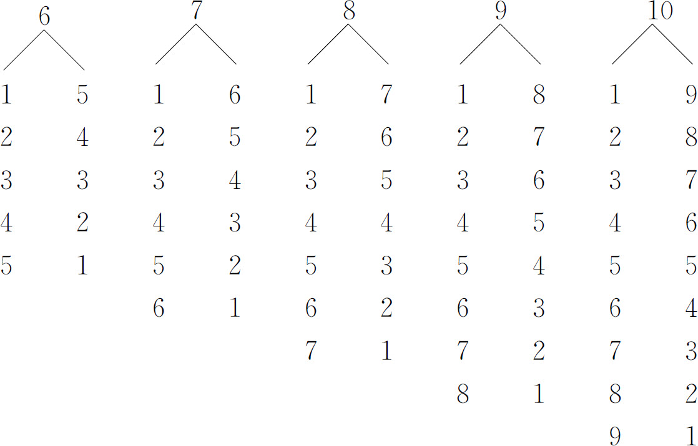
让学生感受归纳法，如图6-4所示，20以内的加法表。
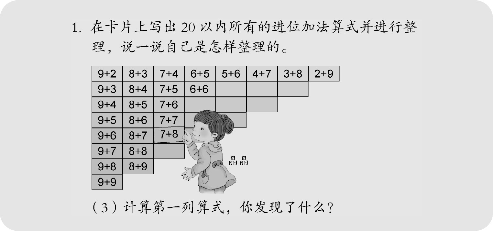
图6-4
表格中是9加几、8加几……，每列算式的一个加数相同、另一个加数从2，3，4，…到9。通过观察几个算式的特点，归纳出其中的规律。再根据发现的规律就能够比较容易填写空格，有利于培养推理能力。
数学家张景中院士认为计算和推理是相通的，计算中有方法，方法里就体现了推理；推理是抽象的计算，计算是具体的推理。如9＋7＝9＋1＋6＝10＋6＝16，由1＋5＞5，5＞2＋2，推出1＋5＞2＋2。这既是一个计算过程，也是一个推理过程。具体内容和教学目标如下。
让学生感受推理思想，同时能够灵活地思考。推理本身具有逻辑性，但是要灵活地运用推理。如教材第110页的第16题，如图6-5所示。
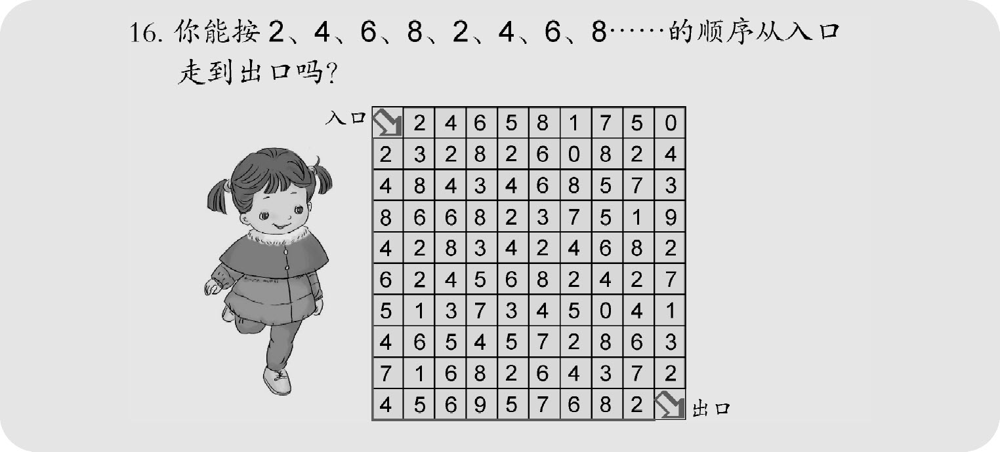
图6-5
此题根据题目的要求是从入口按照2—4—6—8的循环路线走到出口，一般的学生会从入口出发，寻找路线。但是可能会遇到断路，需要重新寻找，因为这种迷宫题的特点是路线发散。因此不妨换个思路，先从出口开始，按照8—6—4—2的顺序倒推回去，如果遇到岔路，再采取两头堵的办法，同时从入口寻找，找到相遇点。
本册教材相关的具体内容和教学目标如下。
（1）体会“形”的直观性。各种实物或图形作为各种直观工具帮助学生理解和掌握知识、解决问题，如借助直线认识数的顺序并计算，认识数的时候用小棒摆三角形、正方形、五边形、六边形等。
（2）了解可以用数来描述几何图形。各种图形的认识，可增加用数的量化来描述形，如认识长方体和正方体时老师引导学生数一数，它们都有六个面、八个顶点等。当然，根据教材的编排思路，这些知识在一年级是不学的；在不增加学生负担及不考试的前提下，让学生初步感受数中有形、形中有数的思想是有益的。如图6-6所示为一年级上册的1～5的认识。
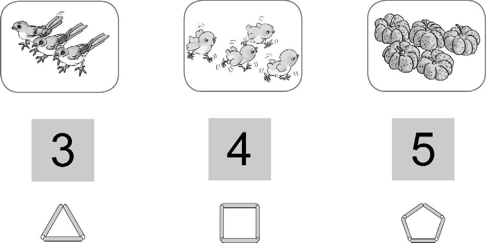
图6-6
在本册教材中，有很多渗透函数思想的例子。如在加法算式中，一个加数不变，和随着另一个加数的变化而变化，可表示为y ＝x ＋b 的形式；在减法算式中，被减数不变，差随着减数的变化而变化，可表示为y ＝b -x 的形式，都可以渗透一次函数的思想。具体内容和目标如下。
通过一组一组的数之间相互依存的算式，感受函数思想。如20以内的加法、10以内的减法，把完整的各组算式写出来，让学生观察。
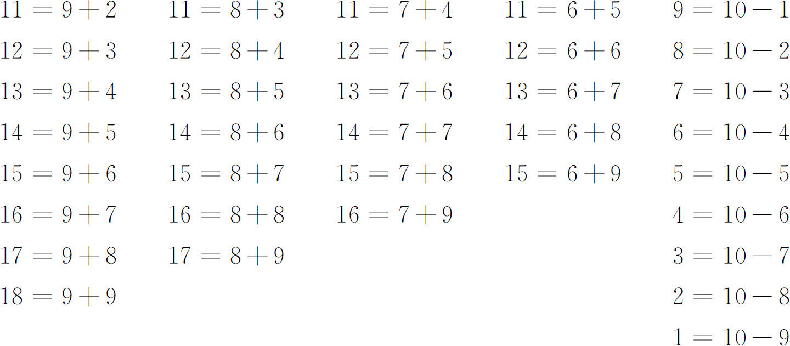
表格中的加法算式从左到右分别是9加几、8加几，……引导学生先算出第一列算式，发现一个加数不变，另一个加数不断加1，和也随着加1。让学生感受这种变化的数之间的依存关系。
本册教材相关的内容和教学目标如下。
（1）第1单元认识图形，结合平面图形的认识，让学生感受分类思想。
（2）第3单元，认识到分类的作用，分类与统计有着密切的联系。
（3）第5单元认识人民币，知道人民币有元、角、分三种计量单位。
第7单元找规律，通过观察给出的图形和数字的排列特点，归纳出规律，让学生感受归纳法。如教材第91页第13题，通过观察发现，单数的旗子是红色的，双数的旗子是黄色的，所以第10面旗子是黄色的。
如前文所述，计算和推理关系密切，如计算36-8＝28，实际上包含了这样的推理过程：36-8＝20＋16-8＝20＋（16-8）＝20＋8＝28或者36-8＝26＋10-8＝26＋（10-8）＝26＋2＝28。因此，加强算理和推理的教学，有利于学生掌握计算方法。另外，加强在数的认识和计算中找规律，同样能够让学生感受推理的思想，如在本册教材总复习中的第1题，如图6-7所示。
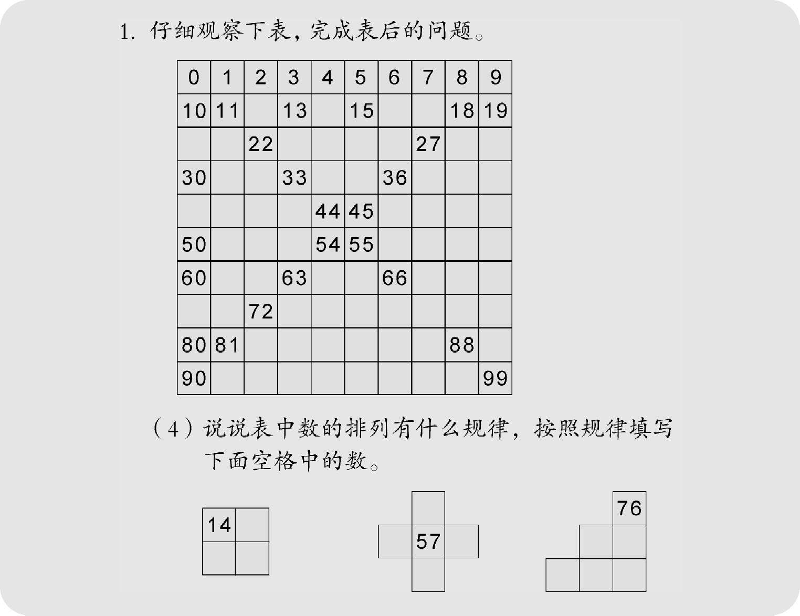
图6-7
表格中是0到99这100个数，每行的十位数相同、个位数从0到9，每列的个位数相同、十位数从1到9。根据发现的规律就能够比较容易填写空格，有利于培养推理能力。
本册教材的内容和教学目标如下。
（1）体会以形助数。如借助小棒、小方块、纽扣等实物认识数，借助百数表认识数的顺序等。
（2）体会以数解形。几何图形的认识，可增加用数的量化来描述形，如认识三角形、长方形、正方形、平行四边形时，引导学生观察这些图形各有几条边、几个顶点。
（3）认识到统计图表是数形结合的产物。统计图表本身就是数形结合思想的体现，统计图表把抽象的枯燥的数据直观地表示出来，便于分析和决策。
如图6-8所示，本册教材第21页例6的利用减法解决问题，通过摆两组一一对应的圆片，理解用减法计算的道理和方法。
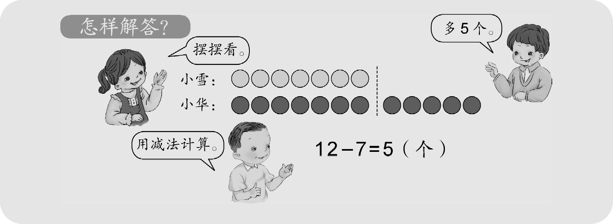
图6-8
根据《标准（2011版）》的描述，在义务教育阶段，数学模型主要是指用方程、不等式和函数等表示的数量关系或变化规律，如关于路程、速度、时间的实际问题，数量关系可表示为s ＝vt ，当其中的两个量一定，求第3个量时，就可以列出方程；当其中的一个量一定，另两个量变化时，就可以列出函数关系式。当然，在小学阶段，一般的数量关系式、公式、按规律排列的一组数、算式或图形等都可以看成数学模型，如“总价＝数量×单价”。
本册教材相关的具体内容和教学目标如下。
（1）让学生了解自然数序列0，1，2，3，…探索数的排列规律。
（2）让学生探索图形的排列规律。
如图6-9所示，本册教材第七单元“找规律”例3，结合图形来探索数的变化规律。
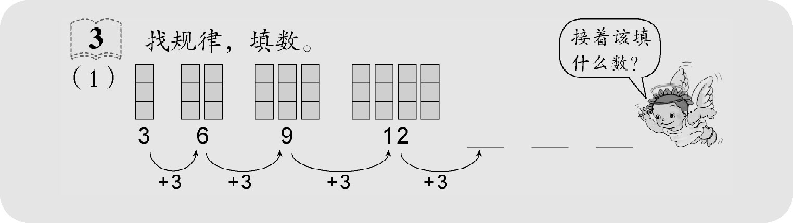
图6-9
例题中每组小正方形与相应的数量一一对应，让学生通过合情推理找规律，感受推理思想、模型思想、一一对应思想、数形结合思想。使学生体会到：数字和图形可以表示相同的规律。
在本册教材中，有很多可以渗透函数思想的例子。如在加法算式中，一个加数不变，和随着另一个加数的变化而变化，可表示为y ＝x ＋b 的形式；在减法算式中，减数不变，差随着被减数的变化而变化，可表示为y ＝x -b 的形式。渗透一次函数的思想。如本册教材第24页的减法表。
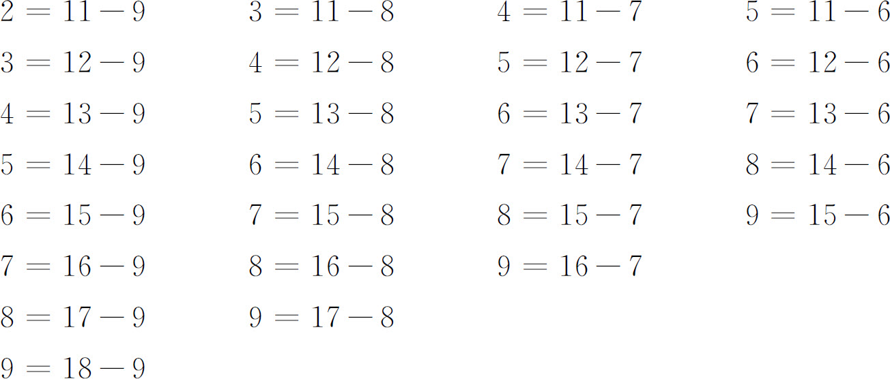
表格中的算式从左到右分别是十几减9、十几减8、……引导学生先算出第一列算式，发现减数不变，被减数不断加1，差也随着加1。让学生感受这种变化的数之间的依存关系。
如图6-10所示，本册教材把分类和象形统计图结合起来编排，使学生认识分类和象形图的作用及二者的关系，体会分类的必要性及统计图表的直观、简洁、清晰。
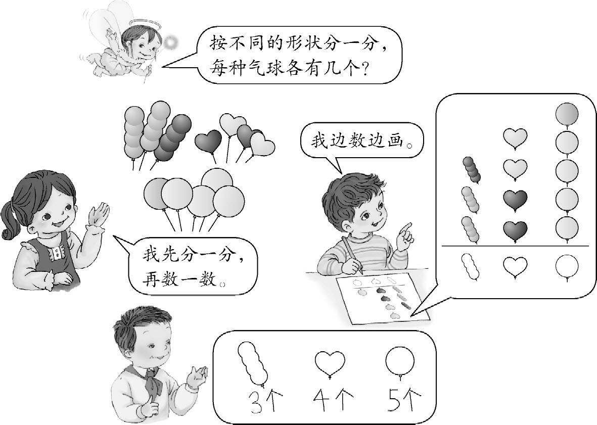
图6-10
本册教材相关的具体内容和教学目标如下。
（1）第1单元长度单位，理解字母符号“cm”、“m”分别表示长度单位厘米和米。
（2）第3单元角的初步认识，了解角的图形符号。如从一个顶点出发画两条边，这样的图形就表示角。
（3）第4单元表内乘法，理解运算符号“×”表示乘法。
（4）第7单元认识时间，知道数字符号可以表示时间。如4：30表示4时30分。
本册教材相关的具体内容和教学目标如下。
（1）第3单元角的初步认识，让学生了解本单元所学习的角可以分为锐角、直角、钝角三类，感受分类的方法。
（2）第8单元搭配，例1，如图6-11所示。
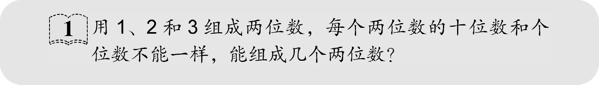
图6-11
让学生知道解决排列组合问题时，可以用分类讨论的方法。用数字1、2、3组成两位数时，可以分为3类：十位是1的有12、13，十位是2的有21、23，十位是3的有31、32。体会把同样的数字放在不同的数位上，表示的数是不同的，结果与事物的顺序有关，如做一做中的题。
（3）第8单元搭配，例2，如图6-12所示。
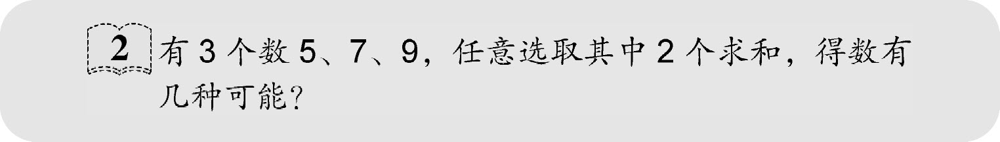
图6-12
可以有条理地思考：先选定最小的5，然后分别与7、9相加，5＋7＝12，5＋9＝14；再选定7，与9相加，7＋9＝16。体会两个数的和与它们的顺序无关，即结果与事物的顺序无关，如做一做中的题。
（4）教材第99页第4题，如图6-13所示。
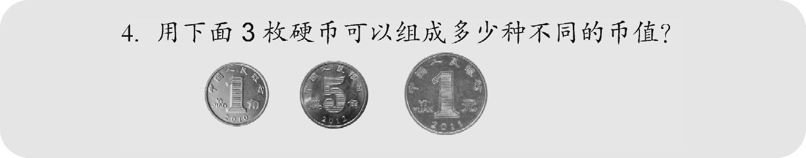
图6-13
可以分为3类讨论：
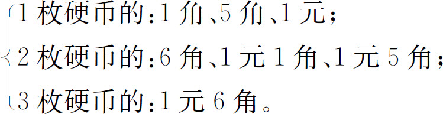
结果与硬币的顺序无关，共有7种币值。学生如果掌握了分类讨论的方法，不但使学生的思维更具有全面性、严密性，而且能够解决更复杂的类似问题。
（1）第3单元角的初步认识，学生学习了锐角、直角、钝角以后，可让学生在黑板上操作活动的角，保持活动角的一条边水平固定，移动另一条边。先摆成一个锐角，再摆成一个直角，这时老师画一条垂直于水平边的另一条边，这样就确定了直角的位置；然后再摆成一个钝角，学生在操作活动的角的过程中进一步体会锐角、直角、钝角及大小关系。接着，在锐角的范围内不断变化活动边，使学生感受到角的大小虽然在不断变化，但是有一点是不变的，就是它始终是锐角。同理进行钝角的操作活动，使学生感受变中有不变的思想。
（2）第4单元表内乘法，在学习乘法的初步认识时，通过观察若干组相同数相加的加法算式，发现这些同数相加的算式无论怎样变化同数及同数的个数，总有些共同的不变的性质，就是都可以用乘法算式表示，乘法算式中的一个乘数总是同数，另一个总是同数的个数，让学生感受变中有不变的思想。
第3单元角的初步认识，在学生进行活动角的操作过程中，在感受变中有不变的思想的同时，也可以发现锐角或钝角的大小都是有限的，而它们的个数却是无限的，感受有限与无限的思想。
（1）第6单元表内乘法，让学生通过观察、计算归纳口诀。如第80页例4中9的乘法口诀，让学生观察积的特点、与乘数的关系，从1到9的每个数与9相乘，每次都加一个9，9比10少1，所以每次都要在个位减少1，十位增加1。
（2）教材第95页第8题，根据每相邻两个钟面指示的时间相差15分钟，推出第4个钟面指示的时间。
（3）如图6-14所示，教材第101页第2题，填写数后，找规律。
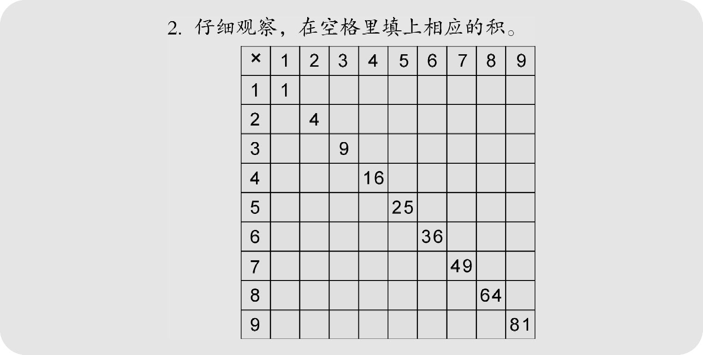
图6-14
观察每行或每列数，根据相邻两个数的差推出规律。
在本册教材中，可以结合乘法表找规律等内容让学生感受推理思想和归纳法。具体内容和教学目标如下。
（1）第1单元长度单位，例8，如图6-15。
图6-15
让学生感受选言推理的方法，一根旗杆的高度要么是13厘米，要么是13米。13厘米还没有一支铅笔长，旗杆的高度肯定不是13厘米，所以旗杆的高度应该是13米。
（2）第3单元角的初步认识，让学生体会关系推理的方法。如学生知道了锐角比直角小，钝角比直角大，也就是直角比钝角小；可进一步引导学生思考：锐角和钝角比，哪个大？学生在一年级已经知道了29＞26，26＞23，所以29＞23的推理方法；自然地可以把这种推理方法迁移至此。
本册教材相关的具体内容和教学目标如下。
（1）第1单元长度单位，结合测量线段的长度，了解图形的某些性质可以用数来描述，感受数形结合的方法。
（2）第2单元100以内的加法和减法，在利用100以内的加减法解决问题中，利用画图来直观呈现各种信息，有利于学生分析数量关系，了解数形结合的方法。
（3）第3单元角的初步认识，结合角的图形，让学生了解角有1个顶点、2条边，从数的角度描述角的三大要素，感受数形结合的方法。
（4）第4、6单元，如图6-16所示，在乘法口诀中利用各种图形（点子图、七巧板、数轴、表格）帮助学生理解乘法的意义和口诀的推导，体会数形结合的方法。
图6-16
（5）如图6-17所示，教材第63页例7。
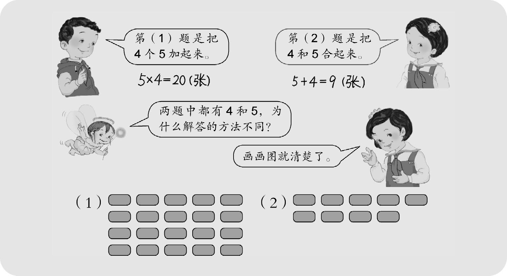
图6-17
在利用乘法和加法解决问题时，通过画图理解解答方法的不同，体会数形结合的方法。通过比较两个图形，发现用乘法计算的图形是长方形方阵，用加法算的就不一定是长方形方阵。
（6）第8单元搭配，在学习和解决排列组合问题时，结合操作卡片、列表、连线等手段，感受数形结合的方法。
在一列乘法算式中，一个乘数不变，积随着另一个乘数的变化而变化，可表示为y ＝kx 的形式，渗透函数思想。具体内容和教学目标如下。
让学生感受函数思想。如教材第52、60、72、75、80页的乘法算式，把每个算式的乘积写出来后，让学生观察每列算式的两个乘数、积的特点，发现在这一列乘法算式中，一个乘数不变，积随着另一个乘数的变化而变化。再如教材第101页的乘法表，可把每行或每列的乘法算式单独写出来，让学生观察两个乘数、积的特点。
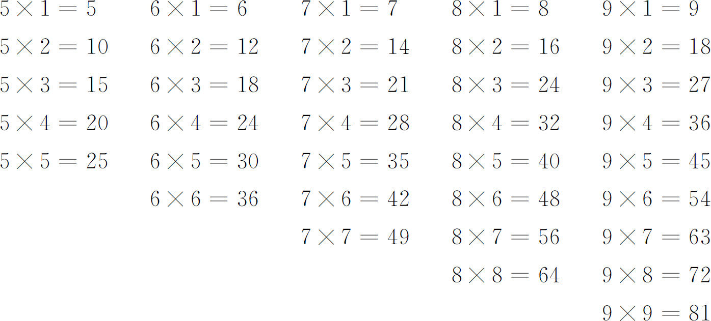
学生学习了乘法以后，理解了乘法是若干同数相加的简便算法，是特殊加法的进一步抽象和简化，从而体会数学的简洁美。
数学的某些概念、公式、性质、法则之间既有一些相同的性质，也有一些不同的特征，把它们放在一起进行对比，有利于加深理解基础知识、掌握基本技能。因此，对比差异是常用的数学思想和方法。通过对比，发现研究对象的不同特征，能够提高学生分析问题和解决问题的能力。如加法和乘法之间既有相同之处，也有不同的地方。教材第63页例7就是为了让学生理解乘法和加法的意义，体会二者之间的不同，设计了情境和信息相似，把算法不同的两道题进行比较，让学生体会对比差异的方法。
本册教材相关的具体内容和教学目标如下。
（1）第2单元表内除法，理解运算符号“÷”表示除法。
（2）第8单元克和千克，理解字母符号“g”、“kg”分别表示质量单位克和千克。
本册教材相关的具体内容和教学目标如下。
（1）第1单元数据收集整理，使学生知道在调查统计中要对调查的对象进行分类，对收集的数据要分类统计并进行描述，这样不但能够进行计数，而且能够对各类数据进行比较、分析，帮助人们进行决策。
（2）教材第89页的思考题，如图6-18所示。
图6-18
该题体现了分类讨论的方法，可以分为百位上分别是3、4、6这三类情况讨论：百位上是3的，有2个：346，364；百位上是4的，有2个：436，463；百位上是6的，有2个：634，643；共有6个。
本册教材相关的具体内容和教学目标如下。
（1）第1单元数据收集和整理，除了体现统计思想和抽样调查法外，还体现了统计推理的方法，统计推理是由样本是否有某种属性推出总体也是否有某种属性的不完全归纳推理，结论是或然的。如教材第2页例1的第（3）题，把一个班的统计结果用于全校作为选择校服颜色的依据，不一定合适，还要再扩大统计范围。当然也不能说一定不合适。
（2）第4单元表内除法，例1用7、8的乘法口诀求商，引导学生思考：通过用2～6的乘法口诀求商，你发现了计算表内除法的方法了吗？使学生通过几个特例归纳出可以用乘法口诀计算表内除法。
（3）第5单元混合运算的顺序，通过几个特例归纳出运算顺序，包括同级运算的、不同级运算的和有括号的运算顺序。
（4）第6单元有余数的除法，教材第61页例2教学余数与除数的关系，教材通过让学生用不同根数的小棒摆正方形，观察一组算式，探索余数与除数的关系，通过归纳法发现余数总是比除数小。还可以引导学生思考：这是为什么？学生通过操作、观察，发现当余数是3的时候，再增加1根小棒就可以再摆出一个正方形，而余数是0了，也就是说余数不可能是4，进一步归纳出在除法中，余数不可能大于或等于除数。
（5）第7单元万以内数的认识，教材第85页例7、第86页例8，通过几个有代表性的特例，引导学生归纳万以内数的读法和写法。
（6）第7单元万以内数的认识，教材第90页例9，通过几组数的大小比较，引导学生归纳出万以内数的大小比较方法。
本册教材相关的具体内容和教学目标如下。
（1）第7单元万以内数的认识，如图6-19所示是教材第96页例13，教学估算的策略。
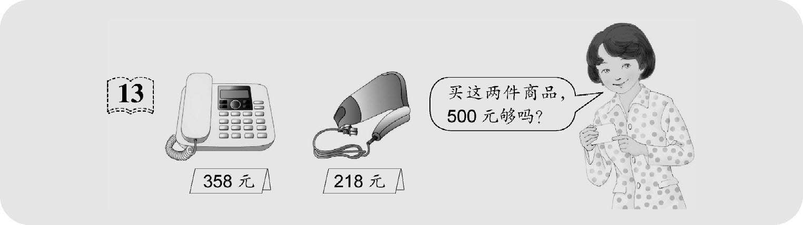
图6-19
引导学生思考：358＞300，218＞200，所以358＋218＞300＋200，即358＋218＞500；所以500元不够。如果要解决700元够不够的问题，就要换一种思路，往大了估：358＜400，218＜300，所以358＋218＜400＋300，即358＋218＜700；所以700元够了。让学生体会关系推理的方法。
（2）第9单元推理，教材第109页例1，有语文、数学和品德与生活三本书，小红、小丽和小刚各拿一本。已知小红拿的是语文书，小丽拿的不是数学书。根据不相容选言推理的规则，肯定一部分选言支，就要否定其余的选言支；否定一部分选言支，就要肯定另一部分选言支。可以推出小丽拿的是品德与生活书，小刚拿的是数学书。让学生体验选言推理的方法。
（3）第9单元推理，教材第110页例2，是“数独游戏”的简易版，在4×4的方格中，每行或每列都有1～4这四个数，并且没有重复数字。这个游戏可以用不相容选言推理来解决，每行和每列都没有重复数字，即每个空格都要观察它所在的行和列已经出现了什么数字，一旦出现的数字就要排除。如例2方格中的A 所在的行和列已经出现了1、2、3，那么可以肯定的是A 只能是4；再类似地推出B 只能是1。
（4）如图6-20所示是教材第112页的第7题。
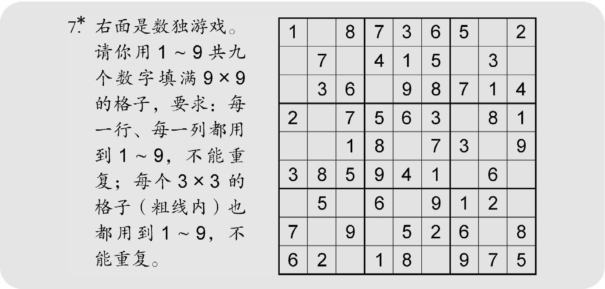
图6-20
此题是很简单的数独游戏，可以先观察哪些3×3的格子（简称“宫”）里已经有8个数字，能够很快确定这些宫里填几。第2、5宫里已经各有8个数字，用排除法（选言推理）确定唯一可填数字2。然后再观察哪些行或列已经有8个数字，用排除法确定唯一可填数字是几。
当面对比较复杂的数独游戏时，每个宫或每行、每列都不足8个数字，这时就要观察哪个空格所在的行和列的数字最多，进行排除，确定唯一可填数字；如果有两个候选数字，还要结合这个宫的情况确定唯一可填数字。
本册教材相关的具体内容和教学目标如下。
（1）第1单元第6页的第7题，用简单的条形图表示数据，感受图形可以表示统计数据。
（2）第2、4单元表内除法，很多例题都是利用实物或图形表示被除数。如教材第38页例1，通过旗子方阵图，体会当图形是长方形方阵时，可以用乘法计算总数，也可以用除法计算方阵的行数或列数。在有余数除法中，教材第61页例2通过用小棒摆正方形这一直观操作手段，有助于学生发现规律，理解余数比除数小的道理。教材第68页例6，找图形的排列规律，引导学生发现以几面旗子为一个循环单位的图形排列问题，可以用有余数的除法来解决，体会以数解形的方法。
（3）第7单元1000以内和10000以内数的认识，利用小正方体、计数器、数轴、小棒、数位顺序表、算盘等直观手段帮助学生理解计数单位、数位、数的组成，及如何写数、读数、表示数等。
本册教材第3单元图形的运动（一）共有4个例题，具体教学目标如下。
（1）结合实例，感受平移、旋转、轴对称现象。
（2）能辨认简单图形平移后的图形。
（3）通过观察、操作，初步认识轴对称图形。
（4）体验剪纸的操作活动，初步掌握剪轴对称图形的方法。
在一列除法算式中，除数不变，商随着被除数的变化而变化，可表示为y ＝x ÷k 的形式，渗透函数思想。具体内容和教学目标如下。教材第45页的除法表，把每个算式的商写出来后，引导学生观察每列算式的被除数、除数、商的特点，发现在每一列除法算式中，除数不变，商随着被除数的变化而变化。
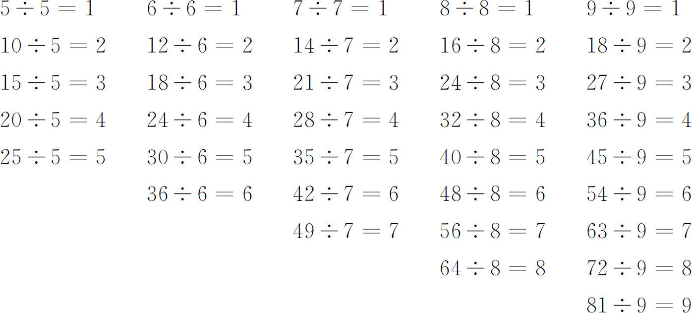
本册教材第1单元“数据收集整理”中的两个例题的具体教学目标如下。
（1）经历简单的数据收集和整理过程，知道在生活中有些问题需要先进行调查研究，收集数据，然后通过分析作出判断。
（2）了解调查等收集数据的简单方法，感受抽样调查的方法。
（3）能用简单的统计表表示数据。
（4）通过对数据的简单分析，体会用数据进行表达与交流的作用，感受数据蕴含的信息。
学生学习了图形的运动以后，知道了生活中有很多轴对称图形，以及通过图形的运动形成的各种图案，这些图形和图案是非常美丽和丰富多彩的，给人们的生活带来了美的享受，从而体会数学美的思想。
学生学习了除法以后，了解了平均分是一种特殊的减法，即除法是被减数减去若干相同减数的简便算法，是特殊减法的进一步抽象和简化，从而体会数学的简洁美。利用有余数的除法解决问题，尤其是找图形的排列规律，不必一个一个地去画和数，让学生体会除法模型的简洁美。
小学生的思维以形象思维为主，逐步向抽象逻辑思维过渡。此外，在小学数学中还渗透着既对立又统一的辩证思维，如加与减、乘与除、圆与方、有限与无限、变与不变等辩证关系。学生学习了利用乘法口诀计算除法后，体会到二者之间的辩证关系。
本册教材相关的具体内容和教学目标如下。
（1）第1单元时、分、秒，知道数字符号可以表示时间，如04：30：35表示4时30分35秒。
（2）第3单元测量，理解字母符号“mm”、“dm”、“km”、“t”分别表示长度单位毫米、分米、千米和质量单位吨。
（3）教材第77页实践活动数字编码，知道数字符号可以编码，表示各种信息。
（4）第8单元分数的初步认识，认识分数符号，知道分子、分母、分数线构成的符号就表示分数。
（5）第9单元集合，认识集合的图形符号（文氏图）。
本册教材相关的具体内容和教学目标如下。
（1）教材第77页实践活动数字编码，让学生体会邮政编码实际上是按照一定的标准把全国划分成不同的邮区和投递局，进行编码，而不是完全按照省市区县的行政地域来划分的。体会分类思想的实际应用。
（2）教材第77页实践活动数字编码，让学生体会身份证号实际上是按照省、市、区县为标准，把每个人以出生地为依据确定身份证号。如1101051995********，表示这个人是北京市朝阳区1995年出生的公民。
（3）第7单元长方形和正方形，例1四边形的认识，实际上是把各种图形分成两类：四边形和非四边形。
（4）第9单元集合，如图6-21所示是教材第104页的例1。
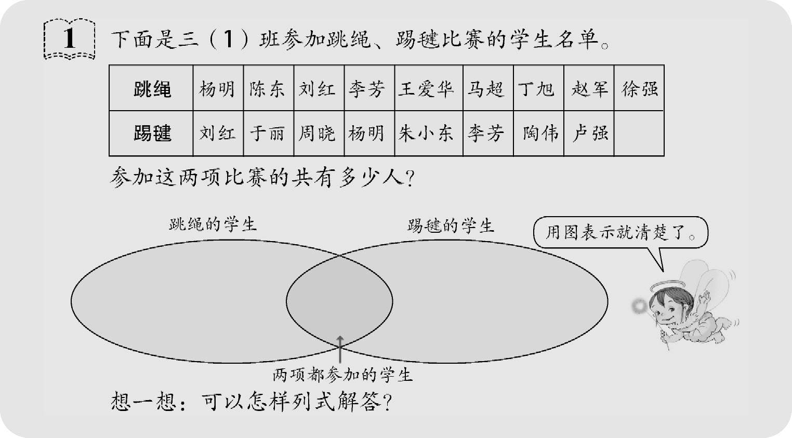
图6-21
让学生体会求两个集合的并集，实质上是把两个集合的所有元素分成3类。如求跳绳的和踢毽的一共有多少人，可以把这些人分成3类：第一类是只跳绳的，第二类是既跳绳的又踢毽的，第三类是只踢毽的。列式为：6＋3＋5＝14。
本册教材相关的具体内容和教学目标如下。
第9单元集合，通过直观的文氏图表示两个集合的关系，计算参加跳绳和踢毽的人数，让学生体会集合及集合的并集、交集等概念。理解把相同性质的一类事物放在一起就是一个集合，集合中的每个事物就是一个元素，而且这些元素是互不相同的，即相同的事物在一个集合中只算一个元素，如不能说集合A ＝｛1，2，3，3｝有4个元素，只能写成A ＝｛1，2，3｝，有3个元素。把两个集合的所有元素合在一起，变成一个集合，就是求并集，求并集后重复的元素只算一个，要让学生结合教材第105页做一做的直观图理解“既……又……”、“或”的含义。
本册教材相关的具体内容和教学目标如下。
（1）教材第77页实践活动数字编码，表面上是符号思想和分类思想的运用，本质上却是对应思想的体现，如身份证号的编制体现了一一对应的思想，即一个公民对应一个号码。
（2）如图6-22所示是教材第105页的思考题。
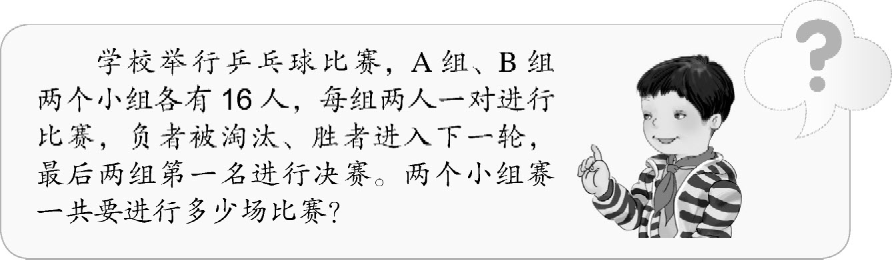
图6-22
可以用一一对应的思想来分析：因为采取的是2人一对一比赛一场淘汰一个人，有一场比赛就淘汰一个人，没有比赛就不淘汰人，要想淘汰一个人就必须有一场比赛，也就是说比赛的场数与被淘汰的人数是一一对应的。在一个小组参赛的16人中，最后只有一人得第一名，要淘汰15人，所以比赛的场数为15场。所以两个小组赛淘汰30（15＋15＝30）人，比赛30场。
本册教材相关的具体内容和教学目标如下。
分数与除法有密切的联系，教材把这种关系编排在了五年级。学生在本册学习了分数的初步认识后，可以通过操作、观察各种图形，体会分数实际上就是把一个物体、一个图形或几个物体平均分成几份，这样的一份或几份与总份数相比，有多大，用分数表示。体会分数最重要的前提是平均分，而除法也是平均分，如求8支铅笔的3/4是多少，就是把8支铅笔平均分成4份，取其中的3份，8÷4×3＝6。所以二者之间有密切联系，体会变中有不变的思想。
本册教材相关的具体内容和教学目标如下。
（1）第4单元万以内的加减法（二）中的三位数加减三位数的笔算，可以在每个人计算的基础上进行小组讨论交流，归纳概括法则，最后由教师补充完善。
（2）第6单元多位数乘一位数的计算法则，也要在每个人总结计算方法的基础上进行小组讨论交流，归纳概括法则，最后由教师补充完善。
（3）如图6-23所示是教材第75页的思考题。
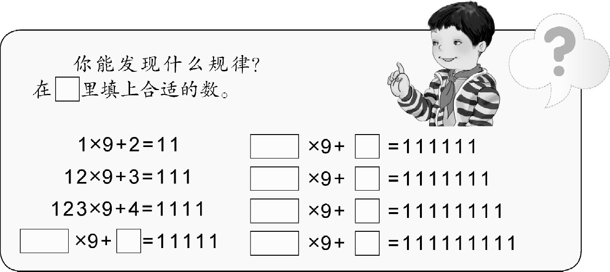
图6-23
观察前3个式子，发现每个式子都是一个数乘9加另一个数，与9相乘的数分别是1，12，123；加上的数分别是2，3，4；据此可以初步归纳出规律：第几个式子，与9相乘的数就是几位数，而且高位到低位从1开始逐渐加1；加上的数比项数大1。可以推出第4个式子是：1234×9＋5＝11111。
（4）第7单元长方形和正方形的周长公式，可以在每个人总结计算方法的基础上进行交流，归纳概括出简洁的公式。
（5）第8单元分数的初步认识，通过把一个物体、一个图形平均分成几份，根据表示其中1份的这些数，初步归纳出分数；再根据表示其中几份的这些数，再次归纳出分数；最后根据把6个苹果平均分成3份，表示其中1份或2份的数也是分数。可以进行总体归纳，引导学生从本质上初步把握分数的概念。
（6）如图6-24所示是教材第99页的第9* 题。
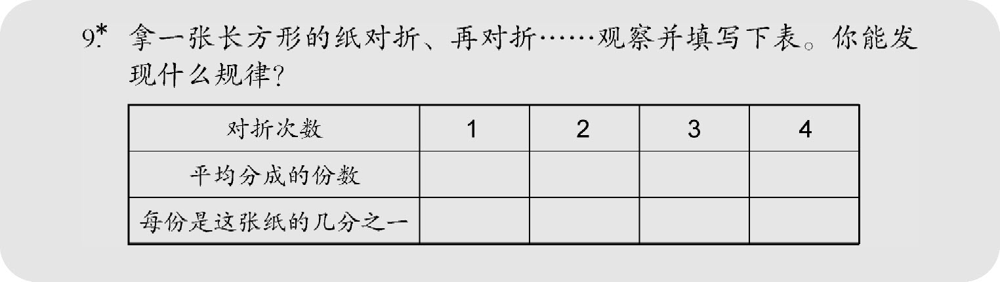
图6-24
学生经过折纸实验，发现每次对折都是把原来的份数再平均分成2份，所以每次对折后的份数都是前一次的2倍，归纳出第几次对折后的份数就是几个2相乘。
本册教材相关的具体内容和教学目标如下。
（1）第2单元万以内的加减法（一），两位数加减两位数的口算，可以类比二年级上册相应的笔算方法，在头脑中口算；也可以分步口算，如35＋34＝35＋30＋4＝65＋4＝69。
（2）第2单元万以内的加减法（一），几百几十加减几百几十的笔算，可以类比二年级上册两位数加减两位数的笔算方法，进行列竖式计算；也可以类比本单元的口算，如380＋550，38＋55＝38＋50＋5＝88＋5＝93，380＋550＝930。
（3）第4单元万以内的加减法（二），三位数加减三位数的笔算，可以类比几百几十加减几百几十、两位数加减两位数的笔算方法，进行列竖式计算和法则的归纳概括。
本册教材相关的具体内容和教学目标如下。
（1）如图6-25所示是教材第15页的例4。
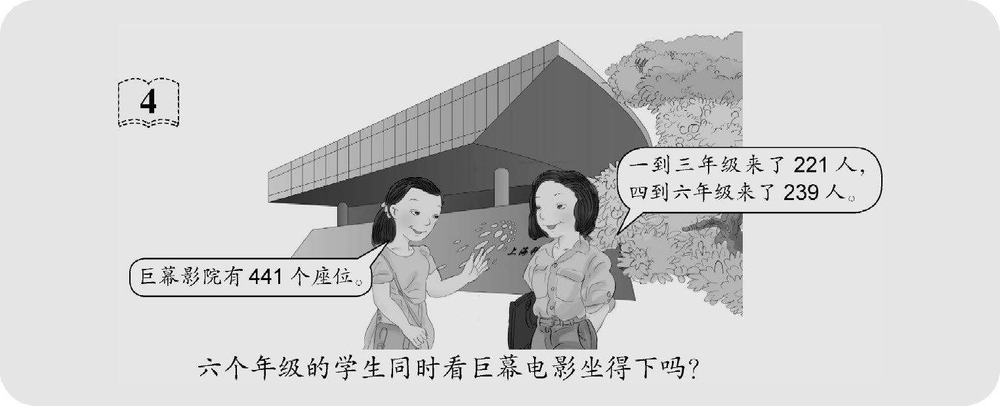
图6-25
电影院有441个座位，估算策略是把原数看小，方法是推理。分别把221和239舍去个位数，取近似数220和230，220＋230＝450，450＞441，221＋239＞450，推出221＋239＞441，所以坐不下。
（2）如图6-26所示是教材第49页的思考题。
图6-26
根据算理和算法进行推理。观察式子，发现得数有进位，因为加法每次最大向前一位进1，所以最高位一定是1，即△＝1。两个○相加的和的个位是8，那么△上边的○一定是9，即○＝9。最后确定□＝0。
（3）如图6-27所示是教材第70页的例7。
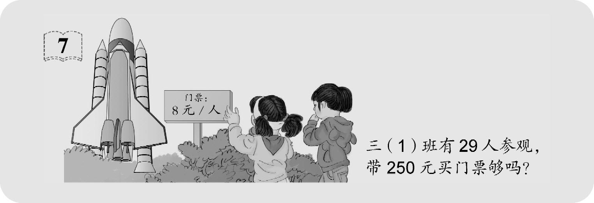
图6-27
估算策略是把原数看大或看小，方法是推理。把29看成30，30×8＝240，240＜250，29×8＜240，推出29×8＜250，所以29人带250元肯定够了。例7的最后又提出了两个问题：如果92人参观，带700元买门票够吗？800元够吗？92人参观，90×8＝720，720＞700，92×8＞720＞700，推出92×8＞700，所以92人带700元不够。100×8＝800，92×8＜100×8，推出92×8＜800，所以92人带800元肯定够了。
本册教材注意应用转化的思想，把抽象的问题转化成直观的形式，把新知识转化成旧知识。相关的具体内容和教学目标如下。
（1）第2单元万以内的加减法（一），两位数加减两位数的口算，可以转化成分步已学的口算，如65-48＝65-40-8＝25-8＝17。
（2）第2单元万以内的加减法（一），几百几十加减几百几十的笔算，可以转化成两位数的口算，如550-380，55-38＝55-30-8＝25-8＝17，550-380＝170。
（3）第3单元测量，由于千米和吨的概念不容易理解，可以通过转化的方法来理解，把1千米转化为2圈半的标准400米跑道、10个100米跑道等。把1吨转化为40个重25千克的学生体重，200桶重5千克的食用油，20袋50千克的大米等。通过这些直观的方式帮助学生建立表象。
（4）第8单元分数的初步认识，如图6-28所示是教材第101页的例2。
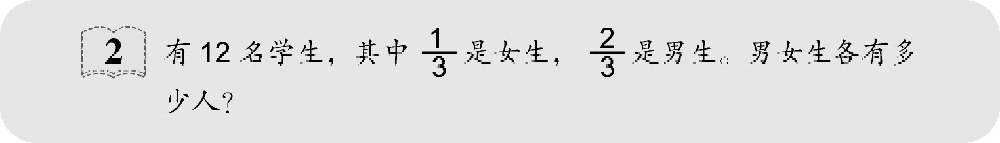
图6-28
把求一个数的几分之几是多少的分数乘法问题转化为整数除法和乘法问题，即求12人的2/3是多少，可以转化为：12÷3×2＝8。
本册教材相关的内容和教学目标如下。
（1）第5单元倍的认识，例2求擦桌椅的人数是扫地的几倍，把擦桌椅的12人和扫地的4人画图表示出来，直观感受二者的倍数关系；例3求象棋的价钱，用线段图表示二者之间的数量关系，体会以形助数的方法。
（2）第6单元多位数乘一位数，用小棒作为直观手段帮助理解算理和算法，理解以形助数的方法。
（3）第6单元多位数乘一位数，例8求买8个同样的碗需要多少钱，画图表示数量关系。例9求买单价是9元的碗，能买几个，画线段图表示数量关系，用等长的线段表示总价不变。体会以形助数的方法。
（4）第7单元长方形和正方形，用数量描述四边形及其中的长方形、正方形的特征，包括计算周长，体会以数解形的方法。
（5）第8单元分数的初步认识，分数是比较抽象的概念，为了让学生能够初步理解分数的含义，教材运用了大量的图形作为直观手段及操作学具，帮助学生理解几分之一、几分之几、分数的大小比较、分数的加减法计算、用分数解决简单的实际问题。体会以形助数的方法。
（6）第9单元集合，集合是比较抽象的概念，文氏图能够帮助学生理解相关的概念和计算原理。
如图6-29所示是本册教材第114页的思考题。
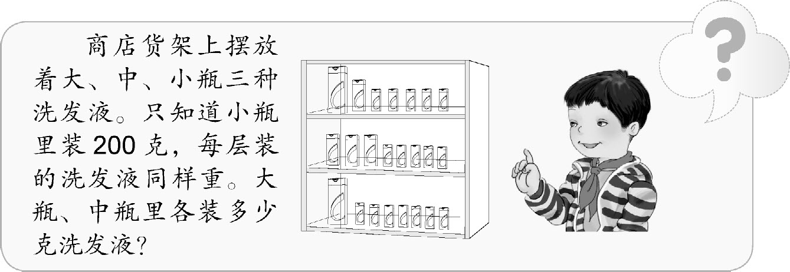
图6-29
体现了代换思想。根据已知条件，可列式：大＋中＋5小＝3中＋5小＝大＋7小，可得：大＝2中，中＝2小；所以中＝2×200＝400，大＝2×400＝800。
本册教材相关的具体内容和教学目标如下。
（1）第7单元，主要是结合长方形和正方形周长的计算，让学生理解周长公式是一种模型。长方形的周长公式C ＝2（a ＋b ），正方形的周长公式C ＝4a 。
（2）虽然本册教材没有正式总结单价、数量和总价之间的数量关系，但是学生已经有了很多相关的生活经验，一年级下册学习了人民币的认识以后，在各册教材中也编排了很多这方面的内容。因此，单价×数量＝总价的模型学生是可以掌握的。第6单元多位数乘一位数，例8求买8个同样的碗需要多少钱，应引导学生抓住模型思想的本质，明确问题求的是买8个碗的总价，数量是8已经给出；需要先求出碗的单价。根据18元买了3个碗，可以求出碗的单价：18÷3＝6。6×8＝48。
本册教材相关的具体内容和教学目标如下。
（1）第65、75页的乘法算式，让学生感受y ＝99x 和y ＝9x ＋b 的函数形式。
99×1＝99
99×2＝198
99×3＝297
99×4＝396
99×5＝495
99×6＝594
99×7＝693
99×8＝792
99×9＝891
（2）第7单元长方形和正方形，结合长方形和正方形的周长公式，体会函数思想。如长方形的周长公式C ＝2（a ＋b ），是个二元函数，周长随着长和宽2个变量的变化而变化。正方形的周长公式C ＝4a 是个正比例函数，周长随着边长的变化而变化。
本册教材相关的具体内容和教学目标如下。
（1）如图6-30所示是教材第35页的第7题。
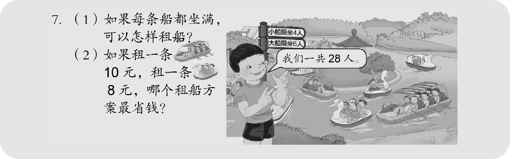
图6-30
利用穷举法得到3个租船方案：7条小船，4条小船＋2条大船，1条小船＋4条大船。解决哪个租船方案最省钱的问题，可以不用穷举法，根据已知条件一条大船坐6人10元，平均每人不到2元；一条小船坐4人8元，平均每人2元。可知租小船贵，那么就直接选择小船最少的方案肯定最省钱，所以1条小船＋4条大船的方案最省钱。
（2）第7单元例5，教材给出的情境是用16个面积是1平方分米的小正方形拼大长方形或正方形，怎样拼周长最小；学生通过实验、比较，然后得出结论。该题实际上是求围成面积是16平方分米的长方形或正方形，怎样围周长最小，体现了优化思想。即a b ＝16，求C ＝2（a ＋b ）的最小值，在小学通过实验、猜想、比较、归纳、验证等方法得出结论。在中学可以利用基本不等式推出结论，根据两个正数的算术平均数大于或等于它们的几何平均数，当a ＝b 时等号成立，推出a ＝b ＝4时，C ＝2（4＋4）＝16是最小值。也就是说，当面积一定时，围长方形或正方形，围成正方形的周长最小。
第3单元测量，如图6-31所示是教材第33页的例9。
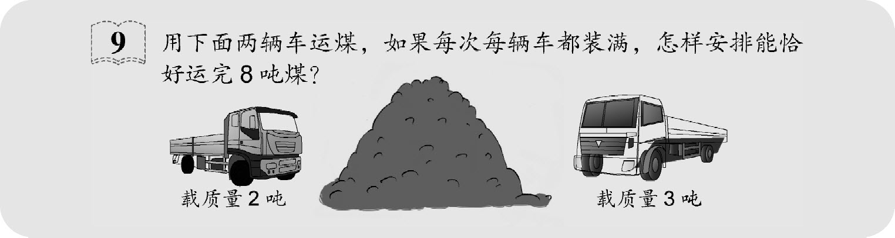
图6-31
用列表的方法把各种方案列举出来，列举的方案有序地排列，保证不重复不遗漏，然后选择合适的方案。
本册教材相关的具体内容和教学目标如下。
（1）第5单元面积，理解字母符号“mm2 ”、“cm2 ”、“dm2 ”、“m2 ”分别表示面积单位平方毫米、平方厘米、平方分米、平方米。
（2）第6单元年、月、日，认识数字符号可以表示24时计时法。如19：39表示晚上7时39分。
（3）第7单元小数的初步认识，知道小数点左边的数、小数点、小数点右边的数构成的符号就表示小数。
本册教材相关的具体内容和教学目标如下。
（1）第1单元位置与方向，让学生体会把空间划分成了东、南、西、北、东北、东南、西南、西北八个方向，体会分类思想的实际应用。
（2）第3单元复式统计表，让学生理解并掌握统计必须把对象按照一定的标准进行分类，给出一个事物就一定能够确定它属于哪一类。如调查学生的体育成绩，把体育成绩分成优、良、及格、不及格4类，那么每个人的成绩一定属于而且只属于其中的一档。
（3）第6单元年、月、日，按照每年的天数，可以把年份分成两类：平年和闰年。12个月按照每个月的天数分为大月和小月，1、3、5、7、8、10、12月都有31天，是大月；4、6、9、11月都有30天，是小月；2月是个特殊的月份，平年28天，闰年29天。24节气，是把地球围绕太阳公转的轨道（黄道）平均分成24份，地球转到哪一份就对应一个节气，所以一个节气大约有15天，每个节气体现一个气候特征。
（4）第8单元搭配，让学生体会解决排列组合问题时，可以用分类讨论的方法。如用数字0、1、3、5组成没有重复数字的两位数时，可以分为3类：十位是1的有10、13、15，十位是3的有30、31、35，十位是5的有50、51、53，共有9个。
（5）如图6-32所示是教材第104页的第5题。
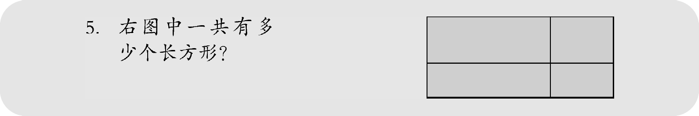
图6-32
可以分3类讨论：
①单个的长方形，有4个。
②两个长方形组合成的长方形，2行2列，有4个。
③4个长方形组合成的长方形，有1个。
4＋4＋1＝9，共有9个长方形。应用此方法可以解决更复杂的问题。
（6）如图6-33所示是教材第105页第9题的第（2）题。
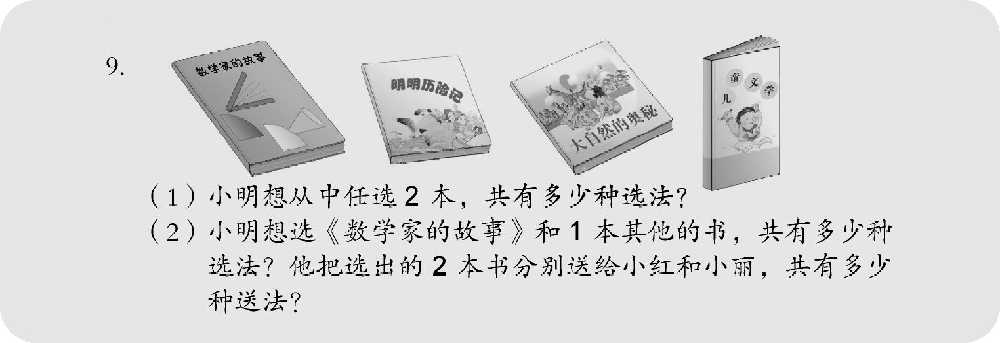
图6-33
可以分两步讨论：
第一步：已经选定一本《数学家的故事》，再从其他3本书中任意选定一本，共有3种选法。
第二步：在3种组合的两本书中，每种组合送给小红和小丽都有2种送法，如《数学家的故事》和《大自然的奥秘》组合送给小红和小丽有2种送法：送给小红《数学家的故事》、小丽《大自然的奥秘》，小红《大自然的奥秘》、小丽《数学家的故事》。
所以一共有6（2＋2＋2＝6）种送法。
分类讨论的方法不但使学生的思维更具有条理性、全面性、严密性，而且能够解决比较复杂的类似问题。
分数与小数有密切的联系，学生在三年级上册学习了分数的初步认识后，可以通过操作、观察各种图形，体会分母是10的分数实际上就是把一个物体、一个图形平均分成10份，这样的一份或几份与10份相比，有多大，用分母是10的分数表示，也可以用小数表示。如1元＝10角，把1元平均分成10份，每份是1角，可以用0.1元表示，也可用
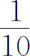
元表示，所以二者之间有密切联系，体会变中有不变的思想。本册教材相关的具体内容和教学目标如下。
（1）第2单元多位数除以一位数的计算法则，应在每个人总结计算方法的基础上进行小组讨论交流，归纳概括法则，最后由教师补充完善。
（2）第4单元两位数乘两位数的计算法则，也应在每个人总结计算方法的基础上进行小组讨论交流，归纳概括法则，最后由教师补充完善。
（3）如图6-34所示是教材第48页的第9题。
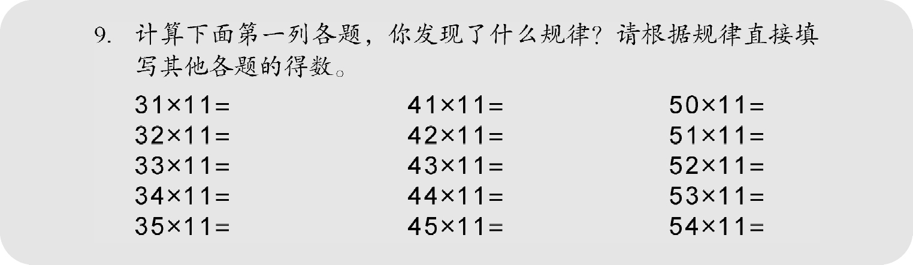
图6-34
观察左边一列的5个式子，发现每个式子都是一个数乘11。通过列竖式计算，发现每个式子的得数都是左边的乘数加上该乘数的10倍，如31×11＝31＋310＝343；据此可以初步归纳出规律：任何数与11相乘，得数都等于这个数加上该数本身的10倍。因此，其他的式子不用列竖式计算，直接按规律写得数，如54×11＝54＋540＝594，99×11＝99＋990＝1089。
（4）如图6-35所示是教材第51页的第10题。
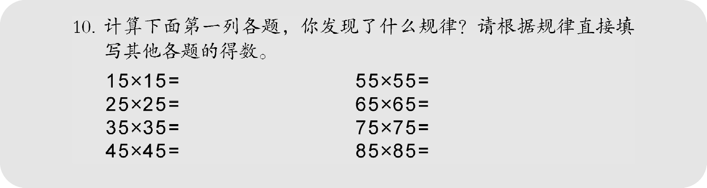
图6-35
观察左边一列的4个式子，发现每个式子都是两个相同的数相乘，而且乘数的个位都是5。通过列竖式计算，发现每个式子的得数的最右边两位（十位、个位）都是25（5×5），而其他数位上的数的规律不容易发现；15×15＝225，25×25＝625，35×35＝1225，45×45＝2025，再进一步观察乘数的十位数与积的其他数位上的数的关系，发现1对应2、2对应6、3对应12、4对应20，即1×2＝2、2×3＝6、3×4＝12、4×5＝20；据此可以初步归纳出规律：任何个位数是5的同数相乘，得数都可以由两部分组成：最右边两位是25，其他数位上的数是：乘数中的5以外数位上的数乘它本身加1所得的积，如95×95，9×10＝90，95×95＝9025。因此，其他的式子不用列竖式计算，直接按规律写得数，如85×85＝7225。
（5）如图6-36所示是教材第59页的第3题。
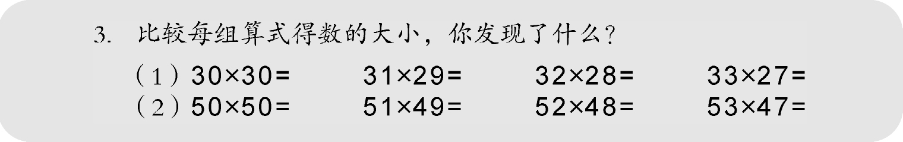
图6-36
30×30＝900，31×29＝899，32×28＝896，33×27＝891。
观察这组式子，从左到右积越来越小，但是两个乘数的和总是60；也就是说，当两个数的和固定不变，这两个数的差越大乘积反而越小，这两个数的差越小乘积反而越大，当两个数相等时，乘积最大。
（6）如图6-37所示是教材第65页的第7题。
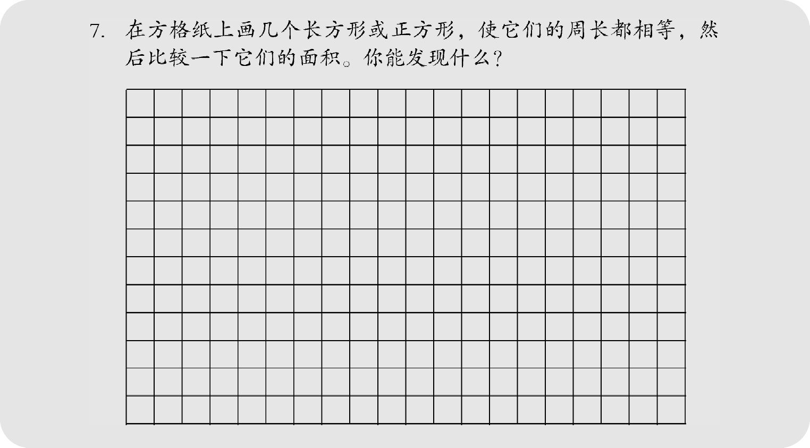
图6-37
通过操作、实验、猜想，归纳规律，发现当周长是定值时，长与宽相差越大，面积反而越小；长与宽相差越小，面积反而越大；当长与宽相等时，即变成正方形时，面积最大。
（7）第5单元长方形的面积公式，引导学生在操作的基础上发现求一个长方形的面积，就是求这个长方形含有多少个单位面积，即用多少个单位面积能够铺满整个长方形，求铺满了多少个单位面积，用长乘宽就可以得到。初步发现这个规律后，再进行交流，然后归纳概括出长方形的面积公式。
（8）第6单元年、月、日，例1通过观察几个年份的年历，归纳出大月和小月的月份规律，同时发现2月份特别。例2，通过观察不同年份2月的天数，发现多数年份的2月有28天，2000年、2004年、2008年等的2月有29天，初步归纳出规律：公历年份是4的倍数的2月一般是29天。当然关于闰年的知识比较复杂，学生归纳出的规律还有特殊情况，对此教材已经作出说明。
本册教材相关的具体内容和教学目标如下。
（1）第2单元多位数除以一位数，可以类比二年级下册有余数的除法，发现他们的相同点，理解竖式的写法。
（2）第4单元两位数乘两位数，可以类比三年级上册多位数乘一位数，发现他们的相同点，知道竖式的写法及一个两位数乘另一个两位数的个位的计算方法。
本册教材相关的具体内容和教学目标如下。
（1）第2单元多位数除以一位数的例8，可以把80和90分别乘3，与267比大小。80×3＝240，90×3＝270，240＜267＜270，所以每天的住宿费在80元与90元之间。
（2）如图6-38所示是第2单元多位数除以一位数的例9。
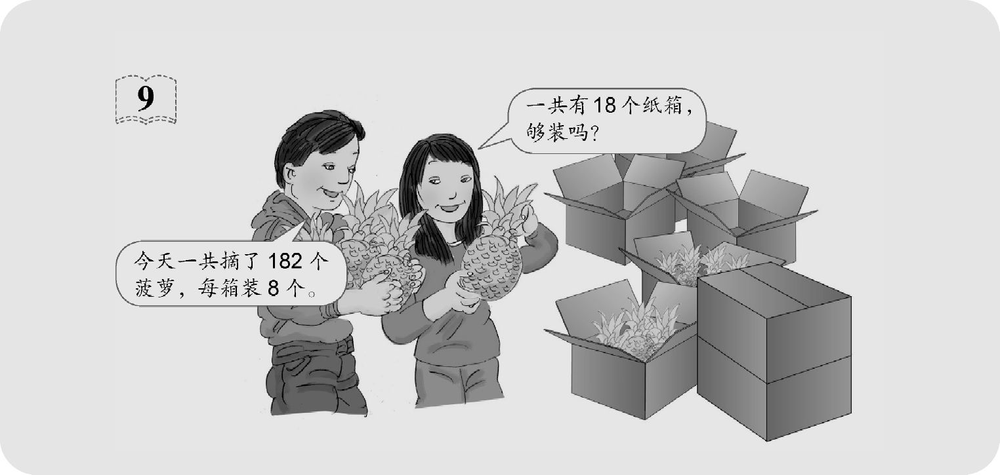
图6-38
估算策略是把原数看大，20个箱子能装160（20×8＝160）个，20×8＞18×8，推出182＞160＞18×8。所以18个纸箱肯定装不下。
（3）如图6-39所示是教材第28页的第13* 题。
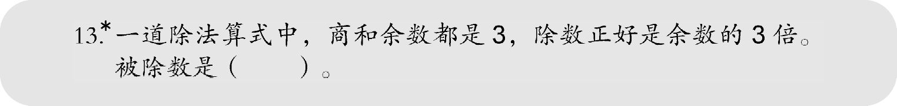
图6-39
根据有余数除法的经验，可以归纳出一个关系式：被除数＝商×除数＋余数，再根据已知条件，除数＝3×3＝9，所以被除数＝3×9＋3＝30。
（4）如图6-40所示是教材第32页的第8* 题。
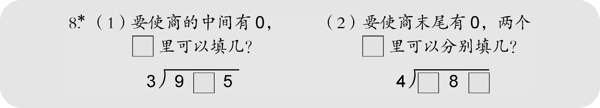
图6-40
根据算理和算法进行推理。观察左边的式子，要使商的中间是0，只要□里的数小于3就行，所以□里可以填0、1、2。右边的式子，要使商的末尾是0，那么被除数的个位一定要小于4，可以是0、1、2、3；同时被除数的前两位除以4没有余数，最高位可以是2、4、6、8。
（5）第5单元正方形的面积公式，已经知道长方形的面积＝长×宽，又知道正方形是长和宽相等的长方形，所以正方形的面积＝边长×边长。
（6）如图6-41所示是教材第103页的思考题。
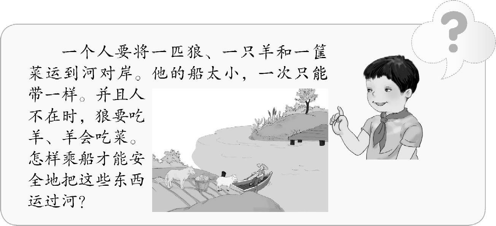
图6-41
由于人不在时狼吃羊、羊吃菜，人每次乘船只能带走一样东西，所以留下的两样东西不能是狼和羊，也不能是羊和菜，只能是狼和菜，那么必须先带走羊。把羊放到对岸后，回来时带走狼或菜都可以，假设带走狼，第二次到对岸后放下狼，同时把羊再带回来，否则还会出现狼吃羊的情况。把羊带回来后放下羊，带走菜，到对岸后放下菜。最后回来带走羊到对岸。
本册教材相关的具体内容和教学目标如下。
（1）第2单元多位数除以一位数，口算除法的例1用直观图表示把60张纸平均分成3份，每份20张。例2和例3同样用直观图表示分的过程和结果，让学生体会以形助数的方法。
（2）第2单元多位数除以一位数，笔算除法的例1用直观的小棒图表示42除以2的过程、原理，先把42中的4个十平均分成2份，每份2个十；再把2个一平均分成2份，每份1个一；所以42除以2等于21，同时借助小棒图理解每一步的写法，即计算的方法。例2同样用直观的小棒图表示分的过程和结果，尤其是先把5个十平均分成2份，每份2个十，还余1个十，这1个十与2个一合并成12，再除以2得6。让学生体会以形助数方法的直观性。
（3）第4单元两位数乘两位数，口算乘法的例1用方块图，例2用直观的实物图作为直观手段帮助理解算理和算法，理解以形助数的方法。
（4）第4单元两位数乘两位数，笔算乘法的例1引导学生画方阵点子图作为直观手段帮助理解算理和算法，学会运用以形助数的方法。
（5）如图6-42所示是教材第47页的第1题。
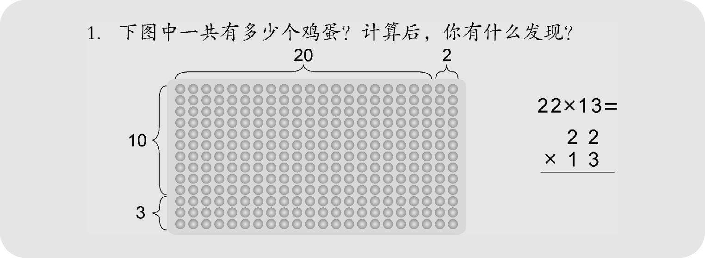
图6-42
用点子方阵图表示22×13的4个乘法步骤的意义，2×3＝6，20×3＝60，2×10＝20，20×10＝200，即点子图由4部分组成：200＋60＋20＋6＝286。由此可引导学生回忆乘法的初步认识及表内乘法，那些乘法都可以用方阵图表示。本册学习的乘法也不例外，也可以用方阵表示。
（6）第5单元长方形和正方形的面积，用数量表示长方形、正方形的大小，体会以数解形方法的实用性。
（7）第6单元年、月、日，24时计时法，用直线标上刻度，把12时计时法与24时计时法一一对应，帮助学生理解抽象的时间。
（8）第7单元小数的初步认识，小数是比较抽象的概念，为了让学生能够初步理解小数的含义，教材运用了线段图、硬币实物图、尺子图、正方形、数轴等作为直观手段及操作学具，帮助学生理解小数的含义、大小比较、加减法计算、用小数解决简单的实际问题。体会以形助数的方法。
（9）第8单元搭配，用树状图、线段图作为直观手段解决排列组合的问题。
如图6-43所示是本册教材第114页的思考题。
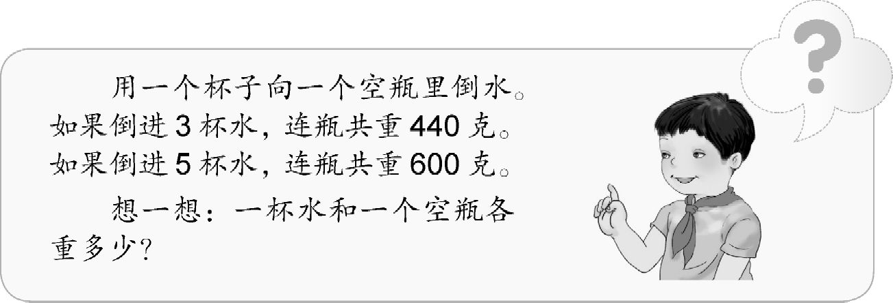
图6-43
体现了代换思想。根据已知条件，可列式：3杯＋1瓶＝440，5杯＋1瓶＝600，可得：2杯＝160，1杯＝80，所以1瓶＝200。
本册教材相关的具体内容和教学目标如下。
（1）第5单元，主要是结合长方形和正方形面积的计算，让学生理解面积公式是一种模型。长方形的面积公式S ＝a ×b ，正方形的面积公式S ＝a ×a 。
（2）学生在三年级上册中结合乘法知道单价×数量＝总价这一模型的基础上，在本册结合除法和乘法继续利用这一模型解决问题，包括这个模型的变式模型：总价÷数量＝单价，总价÷单价＝数量。教材第59页第5题，先求出一天收入多少钱，1260÷7＝180，再求出每小时收入多少钱，180÷9＝20。
本册教材相关的具体内容和教学目标如下。
（1）教材第48页第9题、第51页第10题，让学生结合乘法算式感受y ＝11x 和y ＝x 2 的函数形式。
（2）结合长方形和正方形的面积公式，体会函数思想。如长方形的面积公式S ＝a ×b 是二元函数，面积随着长和宽两个变量的变化而变化；正方形的面积公式S ＝a ×a 是二次函数，面积随着边长的变化而变化。
（3）教材第59页第3题，实际上是两个数的和一定，a ＋b ＝k （定值），求y ＝ab 的变化趋势，y ＝ab ＝a （k-a ）＝ka -a 2 ，是个二次函数。
本册教材相关的具体内容和教学目标如下。
（1）如图6-44所示是教材第28页的第12题。
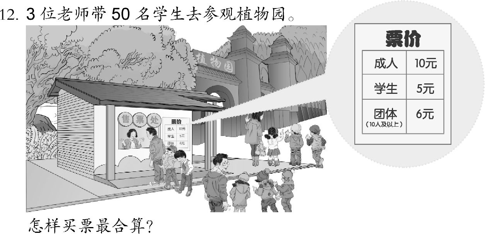
图6-44
可以有3个买票方案：
①3个成人＋50个学生：3×10＋50×5＝280；
②全部买团体票，53×6＝318；
③10张团体票（3个老师＋7个学生）＋43张学生票，10×6＋43×5＝275。所以第3种方案最省钱。
（2）教材第75页第11题，该题是求画出面积是16平方厘米的各种长方形或正方形，观察周长的变化规律，体现了优化思想。通过操作、比较、猜想、归纳、验证等方法得出规律。当面积一定时，长方形的长与宽相差越小，长方形的周长越小，当长等于宽时，周长最小。
第3单元复式统计表，对两种具有可比性的事物进行分类调查数据，并在一个统计表中表示，通过分析比较它们的特点、相同点及不同点，便于作出判断和决策，帮助学生建立数据分析观念。如可以分别调查本年级男生、女生每个人最喜欢吃的一种水果，用复式统计表表示，分析男生、女生各自喜欢的水果情况，比较男生与女生喜欢水果的差别，发现性别与喜欢水果的关系等。
如图6-45所示是本册教材第105页的第10* 题。
图6-45
把所有的符合要求的数一一列举出来，有序地排列，保证不重复不遗漏。
百位是1的有：100，111，122，133，144，155，166，177，188，199；
百位是2的有：200，211，222，233，244，255，266，277，288，299；
百位是3的有：300。
共有21个。
本册教材相关的具体内容和教学目标如下。
（1）第2单元多位数除以一位数，与二年级下册有余数的除法比较，比较它们的不同点，发现本册所学的除法要分几步除，可以先平均分几个十或几个百，最后平均分几个一，从而实现方法的迁移。
（2）第3单元复式统计表，可以利用复式统计表，比较两种事物的数据分布的不同点，便于作出决策。
（3）第4单元两位数乘两位数，与三年级上册多位数乘一位数比较，比较它们的不同点，发现两位数乘两位数的不同之处在于第二个乘数的十位数怎么与第一个乘数相乘，每次相乘的得数表示多少、写在什么位置。这些问题理解了，就能够实现方法的迁移。
（4）第5单元面积，有些学生容易把面积与周长混淆，可以把面积与周长进行比较，发现它们的不同点，利于掌握相应的概念。如一个长5厘米、宽3厘米的长方形，它的面积和周长各是多少？通过计算发现，面积是求这个图形的面有多大，周长是求它的一圈有多长，各自的计量单位是不同的。
本册教材相关的具体内容和教学目标如下。
（1）第1单元大数的认识，认识古代的巴比伦数字、罗马数字、中国数字等数字符号。
（2）第1单元大数的认识，认识计算器上的各种符号，并能够进行简单的计算。
（3）第2单元公顷和平方千米，理解字母符号“km2 ”、“hm2 ”分别表示面积单位平方千米、公顷。
（4）第3单元角的度量，认识表示直线、射线、线段的符号，如直线AB 、射线AB 、线段AB ；认识平行符号“∥”、垂直符号“⊥”。
本册教材相关的具体内容和教学目标如下。
（1）第3单元角的度量，让学生知道角可以分为：锐角、直角、钝角、平角、大于平角而小于周角的角（优角，教材没有给出概念）、周角，体会分类思想在认识概念中的实际应用。
（2）如图6-46所示是教材第50页的第12* 题。
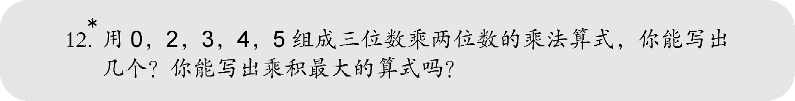
图6-46
本题属于计数问题，学生能够写出几个算式没有具体要求，但可以引导学生分类讨论，如先把5放在三位数的百位上，十位上可以选0、2、3、4，由小到大或由大到小排序，个位上可以选其余的数，也应有序排列；剩下的两个数如果有0，只能组成一个两位数，如果没有0，可以组成两个两位数。具体列举如下。
| 三位数 | 两位数 |
| 502 | 34 |
| 502 | 43 |
| 503 | 24 |
| 503 | 42 |
| 504 | 23 |
| 504 | 32 |
| 520 | 34 |
| 520 | 43 |
| 523 | 40 |
| 524 | 30 |
| 530 | 24 |
| 530 | 42 |
| 532 | 40 |
| 534 | 20 |
| 540 | 23 |
| 540 | 32 |
| 542 | 30 |
| 543 | 20 |
以上共可以组成18个算式，同样的道理，4、3、2分别在百位上，各可以组成18个算式，所以总共有72个算式。
（3）第5单元平行四边形和梯形，让学生通过操作体会到，平面上的两条直线的位置关系可以分成两类：相交和不相交。不相交的两条直线就是平行线，相交的两条直线如果成直角，就是互相垂直。即两条直线互相垂直是两条直线相交的特殊情况。
（4）第5单元平行四边形和梯形，教材第66页例4，对学过的四边形分类如下。
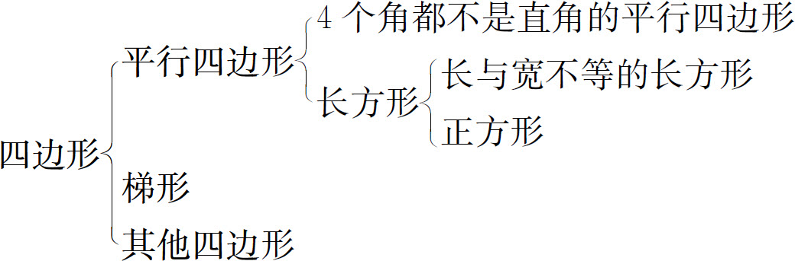
（5）如图6-47所示是教材第69页的第14* 题。
图6-47
可以用分类讨论的方法。
正方形有1个，长方形有2个，平行四边形有2个。
梯形：三个三角形拼成的梯形有2个，五个三角形拼成的梯形有2个，六个三角形拼成的梯形有1个，共有5个梯形。
三角形：单个的三角形有6个，两个三角形拼成的三角形有1个，共有7个三角形。
本册教材相关的内容和教学目标如下。
（1）教材第41页第2题，让学生通过操作发现一个角画在纸上，不管角的边画多长，这个角的大小是固定不变的；两个角只要度数相同就相等，与它们画出来的边长没有关系。
（2）教材第65页例2，一个平行四边形的学具只要保证四条边是直的，不管怎样拉伸，尽管形状变了，但它们的周长不变。
（3）第6单元多位数除以两位数，商不变的规律，学生通过观察算式发现在一个除法算式中，被除数和除数同时乘上或除以同一个非0的数，商不变。体会变中有不变的思想。
本册教材相关的内容和教学目标如下。
（1）第1单元大数的认识，亿以内数的读法、写法、比较大小，亿以上数的读法、写法、比较大小、改写、取近似数，是通过与已有知识进行类比、比较后，进行方法的归纳。
（2）教材第26页第2题，第31页第3题，第32页第8题，根据前几个积的特点归纳规律。
（3）如图6-48所示是教材第44页的第4题。
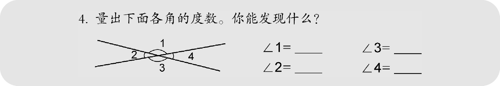
图6-48
可以再画几个两条直线相交的图，测量几个角的度数，通过观察几个例子发现相邻的两个角的和等于平角，相对的角相等。
（4）如图6-49所示是教材第46页的第13题。
图6-49
可以再画几个类似的角，测量几个角的度数，发现所有的角都相等，这些角的顶点都在圆周上，两条边都经过A 、B 两点。
（5）如图6-50所示是教材第48页的“你知道吗？”。
图6-50
本题如果先知道格子乘法的原理和法则后再进行计算，运用的是演绎推理的方法。但是本题是根据一个案例的示范，模仿案例进行计算，运用的是归纳法和类比法；即需要通过观察、猜想、归纳来发现法则，然后运用法则计算。
观察46×75，首先看到的是左边的乘数46写在了格子的上边，一个数字对应格子的一列，十位在左，个位在右；右边的乘数75写在了格子的右边，一个数字对应格子的一行，十位在上，个位在下。格子的左边和下边写的是乘积，从左上到下右，数位由高到低，分别对应千位、百位、十位、个位。
按照竖式计算法则，先算5×6＝30，30写在了乘数5这一行和6这一列交叉的方格里，十位上的3写在左上角，个位上的0写在右下角。4×7＝28，28表示28个百，即2800，所以2是千位上的数，8是百位上的数，28写在了乘数7这一行和4这一列交叉的方格里，千位上的2写在左上角，百位上的8写在右下角。6×7＝42，4×5＝20的分析过程省略。
由此归纳法则：第一个乘数上的每个数分别与第二个乘数上的每个数相乘，每次相乘的积写在两个数所在的行与列的交叉方格里，积的十位数写在左上角，积的个位数写在右下角。最后把每个斜行上的数加起来，写在斜行对应的位置上，如果和大于9，要向前一位进一。
（6）教材第51页例3，通过观察两组算式因数、积的变化特点，归纳积的变化规律。
（7）教材第59页例3，通过画图、测量线段的长度，归纳出平行线之间的垂线段长度都相等。
（8）如图6-51所示是教材第63页的第13题。
图6-51
可以再画几条经过平行线的直线，测量几组对应的两个角的度数，发现对应的两个角相等。
（9）如图6-52所示是教材第68页的第10题。
图6-52
通过测量、计算、画图，再测量、计算，发现任意一个四边形的内角和都是360°。
（10）教材第87页例8，通过观察三组算式被除数、除数、商的变化特点，归纳商的变化规律。
本册教材相关的内容和教学目标如下。
（1）第1单元大数的认识，亿以内数的大小比较，可以与万以内数的大小比较进行类比；亿以上数的改写、取近似数，可以与亿以内的数的相关知识进行类比；发现它们的方法是相似的。
（2）第4单元三位数乘两位数，引导学生把本单元知识与两位数乘两位数进行类比，找到在竖式书写、每一步计算等方面的相同之处。
（3）第6单元除数是两位数的除法，引导学生把本单元知识与除数是一位数的除法进行类比，找到在竖式书写、每一步计算等方面的相同之处。
本册教材相关的具体内容和教学目标如下。
（1）教材第33页的实践活动“1亿有多大”，通过实物和量的形象支撑体会1亿的大小。教材采用了学生常见的纸作为素材，通过估计1亿张纸的高度来体会1亿的大小，首先设计了测量100张纸高（厚）1厘米，再推算出1亿张纸的高度大约是1万米。这个推算过程就是推理过程，1亿＝1000000×100，可得1亿张纸的高度是1000000厘米＝10000米。
（2）如图6-53所示是教材第45页的第7题。
图6-53
计算的过程也是推理的过程。利用相邻两个角的和等于180°，计算出其他角的度数。
（3）如图6-54所示是教材第45页的第10题。
图6-54
估计的过程也可以利用推理，保证估计的过程尽可能有依据、准确。如左数第一个图，根据已有的经验，正方形的对角线平分直角，所以∠1＝45°。
（4）如图6-55所示是教材第46页的第14* 题。
图6-55
可以利用推理的方法，利用两个角组成周角，即两个角的和等于360°，先用量角器量出一个角的度数，再计算另一个角的度数。
（5）如图6-56所示是教材第46页的第15* 题。
图6-56
可以利用推理的方法、等量代换的方法。先把长方形里的∠1和∠2之间的角称为∠3。左边的图，相邻两个角组成直角，即∠1＋∠3＝90°，∠2＋∠3＝90°，可得∠1＝90°；∠3，∠2＝90°；∠3，所以∠1＝∠2。右边的图，相邻两个角组成平角，即∠1＋∠3＝180°，∠2＋∠3＝180°，可得∠1＝180°；∠3，∠2＝180°；∠3，所以∠1＝∠2。
（6）教材第48页“你知道吗？”，在根据归纳法得出计算法则以后，再计算357×46时，两个乘数、每一步计算结果的书写、乘积的计算及书写，实际上都是根据法则在进行推理。
（7）如图6-57所示是教材第50页的第12* 题。
图6-57
此题的第一问，求有多少算式，可以利用分类讨论、数形结合等方法解决。第二问，在这么多算式中找到乘积最大的算式，要进行推理。因为算式是三位数乘两位数，首先应把较大数4、5分别放在两个乘数的最高位上，这样保证乘积最大，然后再比较520×43与420×53的大小，实际上就是比较52×43与42×53的大小，根据以往的经验，两个和相等的数相乘，这两个数的差越小，积越大。可得52×43＞42×53，即520×43＞420×53，所以积最大的算式是520×43。
（8）如图6-58所示是教材第75页的第12* 题。
图6-58
根据有余数除法的经验，可归纳出这样一个模型：乘数×商＋余数＝被除数，由此可以推出另一个模型：乘数×商＝被除数；余数。根据这两个模型可以计算出所需要的答案。
本册教材相关的具体内容和教学目标如下。
（1）第6单元多位数除以两位数，口算除法的例1用小棒图表示80面彩旗，每班20面，能分给4个班，让学生体会以形助数的方法。
（2）第6单元多位数除以两位数，笔算除法的例1用小棒图表示92除以30的过程、原理，先把92中的9个十每3个十圈出1份，共有3份，所以商3；同时借助小棒图理解商3的写法，即计算的方法。让学生体会以形助数方法的直观性。
（3）第7单元条形统计图，描述生活中的各种数据，既可以用统计表，也可以用条形统计图，在直角坐标系里画长方形来表示数据，具有直观、易比较数据之间的大小等特点。让学生体会以形助数方法的直观性。
（4）第8单元优化，例1通过画流程图表示从开始到结束的整个过程，直观地体会有些事情必须先做，如一定要先洗水壶然后接水、烧水，否则洗了茶杯、找到茶叶也没有用。例2通过画图理解烙3张饼的过程与方法，想办法让锅里始终烙2张饼、不烙1张饼，这样的效率最高，最省时间。
本册教材相关的具体内容和教学目标如下。
（1）第3单元角的度量，1周角＝2平角＝4直角，1平角＝2直角，体现了代换思想。
（2）教材第46页第15* 题，既体现了推理思想，也体现了等量代换思想。
（3）第7单元条形统计图，当统计的数据比较大时，坐标系中的纵轴用一个单位长度表示数量1，画起来就不简洁了，所以根据数据的大小，把一个单位长度表示2、5、10等不同的数量，这样就简洁了，体现了抽象的思想、等量代换的思想。
本册教材相关的具体内容和教学目标如下。
（1）第4单元三位数乘两位数，学生在三年级知道单价×数量＝总价这一模型的基础上，例4结合乘法正式给出相关概念及模型，继续利用这一模型解决问题。学生在三年级知道速度×时间＝路程这一模型的基础上，例5结合乘法正式给出相关概念及模型，继续利用这一模型解决问题。
（2）第6单元除数是两位数的除法，利用乘法模型的变式模型：总价÷数量＝单价，总价÷单价＝数量，路程÷时间＝速度，路程÷速度＝时间解决问题。
（3）如图6-59所示是教材第108页的数学游戏。
图6-59
这类问题可以用有余数的除法模型来解决，把报到最后的和作为被除数，把每次能够报的两个数的和作为除数。有以下几种情况：
①除法计算后没有余数，那么一定让对方先报，每次报的数与对方不同就一定获胜。如这个游戏改为谁报到9谁获胜，让对方先报，对方报2你报1，对方报1你报2，对方报2你报1，这时你已经获胜了。
②除法计算后余数不大于每次能报的最大数，你一定要先报，而且就报余数，保证能够获胜。如每次只能报2或3，谁报到33谁胜。33÷-（2＋3）＝6……3，那么你先报3，就把此问题转化成了第一种情况，以后每次报与对方不同的数就可以。
③除法计算后余数大于每次能报的最大数，一定让对方先报，再根据对方报的数，决定下一步报什么，才能够保证获胜。如每次只能报2或3，谁报到34或超过34谁胜。34÷（2＋3）＝6……4，那么对方先报2或3，你就报2，就是想办法不让对方报到和分别是9、14、19、24、29。
本册教材相关的具体内容和教学目标如下。
（1）让学生结合乘法中积的变化规律体会函数思想。如结合例3、做一做、教材第55页第10题等体会y ＝kx 和y ＝x ÷k 的函数形式。两种函数实际上是一致的，需要学习分数以后才能理解。
（2）让学生结合除法中商的变化规律体会函数思想。如结合例8、做一做等体会y ÷k ＝x 、k ÷x ＝y 和y ÷x ＝k 的函数形式。当学生在四年级下册学习了乘法与除法的关系后，能够理解y ＝kx 与y ÷k ＝x 、y ÷x ＝k 的一致性。
本册教材第8单元优化，体现了优化思想。例1是沏茶问题，例2是烙饼问题。这类问题的核心是如何统筹安排做各种事情的顺序和时间，使得我们在最短的时间里完成任务。
例1，首先应明确做事情从开始到结束的逻辑顺序，然后看如果有可以同时做的事情要同时做。在每个人的工作和生活中都涉及时间管理的优化问题，如晚上下班回家后如何合理安排做饭的各种事情和程序，用最少的时间做好晚饭。
例2，应想办法让锅里始终有2张饼，尽管生活中不一定这样烙饼，但是作为数学问题，这样操作是最优策略。
例3，是田忌赛马，属于对策论问题。在军事对抗、体育比赛等领域应用广泛。这种问题，如果双方随机排兵布阵，只能靠运气，才有可能以弱胜强，但是弱方胜率比较小。如果弱方通过情报知道对手的出场顺序，那么弱方就能利用优化的方法合理安排出场顺序，达到取胜的目的。如乒乓球团体赛，可以根据比赛双方队员的胜率情况选择出场顺序和对手，有可能以弱胜强。
第7单元条形统计图，对调查的数据用条形统计图表示，让学生体会条形统计图具有清楚、直观、易比较等特点，有利于分析比较各类数据的特点、大小差异，便于作出判断和决策，使学生能运用条形统计图描述数据、建立数据分析观念。如可以调查本年级同学每个人最喜欢吃的一种早餐，用条形统计图表示，分析学生吃早餐的情况，比较早餐数据的差异，发现一些特点等。
本册教材第8单元优化，如图6-60所示是教材第106页的例3。
图6-60
引导学生把所有的出场组合在表格里一一列举出来，有规律地排列，保证不重复不遗漏，然后找到能够战胜齐王的策略。
本册教材相关的具体内容和教学目标如下。
（1）第1单元大数的认识，亿以内数的读法、写法、比较大小，可以与万以内的数的相关知识进行比较；亿以上数的读法、写法、比较大小、改写、取近似数，可以与亿以内的数的相关知识进行比较；找到他们的相同点和不同点，实现方法的迁移和归纳。
（2）第3单元角的度量，线段、直线和射线既有联系又有区别。可引导学生比较三者之间的联系和区别，体会到三者之间有密切的联系，都是直的，从线段出发引出了直线和射线；线段是可以量出长度的，直线和射线是无限长的，线段有两个端点，射线只有一个端点，直线没有端点。
（3）第4单元三位数乘两位数，引导学生比较本单元知识与三位数乘一位数、两位数乘两位数的联系与区别，如何书写每一步的乘积，实现计算方法的迁移和归纳。认识到它们的共同原理和法则，同时注意不同之处，使学生不仅掌握计算的技能，对计算的认识还能够上升到思想和方法的高度。
（4）第6单元除数是两位数的除法，引导学生比较本单元知识与除数是一位数的除法的联系与区别，实现计算方法的迁移和归纳，认识到它们的共同原理和法则，同时注意不同之处，与乘法一样，对计算的认识还能够上升到思想和方法的高度。
本册教材相关的具体内容和教学目标如下。
（1）第1单元四则运算，让学生认识中括号“［］”和大括号“｛｝”，知道它们在算式中的作用和运算顺序。
（2）第3单元运算定律，理解字母表示的运算定律，加法交换律a ＋b ＝b ＋a ，加法结合律（a ＋b ）＋c ＝a ＋（b ＋c ），乘法交换律a ×b ＝b ×a ，乘法结合律（a ×b ）×c ＝a ×（b ×c ），乘法分配律（a ＋b ）×c ＝a ×c ＋b ×c ，减法的性质a -b-c ＝a -（b ＋c ）。
（3）第5单元三角形，用字母表示三角形ABC 。
本册教材相关的具体内容和教学目标如下。
（1）第5单元三角形，三角形的分类，按照角来分类，三角形可以分为：锐角三角形，直角三角形，钝角三角形。按照边来分类，三角形可以分为：等腰三角形和三边互不相等的三角形，其中等腰三角形又可以分为：等边三角形和只有两边相等的三角形。让学生理解分类思想在概念学习中的重要作用。
（2）如图6-61所示是教材第70页的第7* 题。
图6-61
数三角形的个数需要分类讨论，如左数第二个图形，单个三角形有2个，由两个三角形拼成的三角形有1个，共有1＋2＝3个。左数第三个图形，单个三角形有3个，由两个三角形拼成的三角形有2个，由三个三角形拼成的三角形有1个，共有1＋2＋3＝6个。由此归纳规律：一个三角形，从一个顶点出发向对边画线段，这个三角形被划分成几个小三角形，这个图形中三角形的总数就是从1连续加到几。
第5单元三角形，三角形的分类可以用文氏图直观表示出来，见图6-62。
图6-62
有观点认为把三条边两两互不相等的三角形叫不等边三角形，这样三角形按照边来分类，就可以分为不等边三角形和等腰三角形。根据负概念的定义方式，不等边三角形可能容易被人误解为等边三角形以外的三角形，是不是用“不等腰三角形”代替不等边三角形，这样三角形按照边来分类，就可以分为不等腰三角形和等腰三角形，是否更合理呢？
本册教材相关的具体内容和教学目标如下。
（1）第4单元小数的意义和性质，小数可以在直线上表示，每一个小数对应直线上的一个点。
（2）第7单元图形的运动，每一个轴对称图形，除了对称轴上的点以外，其他的任何一个点都有一个对称点，即对应点，如图6-63所示是教材第82页的第1题。
图6-63
本册教材相关的具体内容和教学目标如下。
（1）第4单元小数的意义和性质，从本单元所学习的有限小数来看，小数部分与分母是10,100,1000，…的分数是形式不同，但本质上是相同的，让学生体会变中有不变的思想。
（2）第4单元小数的意义和性质，小数的性质，让学生理解任何一个小数的末尾添上0或去掉0，小数的大小不变。
（3）如图6-64所示是教材第87页的例4。
图6-64
利用图形的运动把不规则的图形转化成规则的图形，让学生体会在图形的运动过程中，图形的形状变了，面积不变。
本册教材相关的具体内容和教学目标如下。
（1）第3单元运算定律，都是通过计算几个算式，发现他们的共性，然后归纳出加法和乘法的运算定律。
（2）第4单元小数的意义和性质，通过两个例题，发现小数末尾的0对小数的大小没有影响，归纳小数的性质。通过观察一组式子，发现小数点的移动对小数大小的影响，再归纳出规律。
（3）如图6-65所示是教材第62页的例4。
图6-65
给出4组长度不同的小棒，让学生摆三角形，发现能够摆出三角形的三根小棒的长度的关系，归纳三角形的一个性质：三角形任意两边的和大于第三边。
（4）如图6-66所示是教材第67页的例6。
图6-66
让学生画各种类型的三角形，测量他们的各个内角，计算每个三角形的内角和，然后归纳三角形的一个性质：三角形的内角和等于180°。
（5）如图6-67所示是教材第68页的例7。
图6-67
让学生找到各种类型的四边形，想办法计算每个四边形的内角和，然后归纳四边形的一个性质：四边形的内角和等于360°。
（6）如图6-68所示是教材第69页的第4题。
图6-68
通过计算几个不同边数的多边形的内角和，发现内角和是180°的倍数，而且这个倍数与边数有关系，即边数-2＝倍数，然后归纳多边形内角和公式。
本册教材相关的具体内容和目标如下。
（1）如图6-69所示是教材第28页的第11* 题。
图6-69
本题属于运算定律的扩展，可以与相关的已学的定律类比，发现规律的扩展性和适用性。
（2）第4单元，小数的意义和性质、小数的大小比较、求小数的近似数，可以与整数的相关知识进行类比，发现共性，总结方法，加强对小数的理解。发现小数与整数有很多共性，如都是十进制、小数点的左边就是整数、计算法则有很多相同的地方等。
（3）如图6-70所示是教材第68页的“做一做”。
图6-70
多边形的内角和的求法，可以与四边形进行类比，实现方法的迁移。
（4）第6单元小数的加法和减法的计算法则，可以与已学的整数、简单的小数加减法进行类比，发现共性，实现方法的迁移。
（5）第6单元小数的加法和减法，引导学生类比小数与整数，它们有很多共性，包括计算法则方面，因而运算定律同样适用于小数。
本册教材相关的具体内容和目标如下。
（1）如图6-71所示是教材第45页的例3。
图6-71
需要进行推理，1元人民币＝0.1563美元，1万元人民币＝1元人民币×10000＝0.1563美元×10000＝0.1563×10000美元，根据小数点移动的规律，0.1563×10000美元＝1563美元。
（2）如图6-72所示是教材第66页的第7题。
图6-72
实际上是在利用原命题“三角形任意两边的和大于第三边”的逆命题“如果三条线段中任意两条线段的和大于第三条，那么这三条线段能够围成三角形”，进行推理。
（3）如图6-73所示是教材第70页的第6题。
图6-73
给出三角形中的两条边分别是3厘米和4厘米，根据“三角形任意两边的和大于第三边”进行推理，假设第三边长是a 厘米，必须有3＋4＞a ，a ＋3＞4，4＝3＋1，即必有a ＞1，a ＜7。所以另一条边在大于1厘米，小于7厘米的这个范围里。
本册教材相关的具体内容和教学目标如下。
（1）教材第23页第9* 题，利用恒等变形把算式化繁为简，如1＋2＋3＋4＋…＋98＋99＋100＝（1＋99）＋（2＋98）＋…＋（49＋51）＋100＋50＝100×50＋50＝5050。
（2）教材第29页例8，利用运算定律化繁为简，进行简便计算。
（3）教材第68页例7，把任意一个四边形分割成两个三角形，化未知为已知，从而计算四边形的内角和。通过这个例题让学生能够运用化未知为已知的方法解决类似的问题。如第68页的做一做。
（4）教材第87页例4，利用图形变换把不能够计算面积的图形转化成能够计算面积的图形，让学生理解利用图形的运动和转化的方法能够进行图形形状的变化。
（5）如图6-74所示是教材第88页的第4题。
图6-74
让学生运用图形的运动和转化的方法进行图形形状的变化，把这个图形变换成长方形。
（6）教材第104页例1，把鸡兔同笼的原题这一比较复杂的问题转化为例1这样比较简单的问题，便于学生探索解决问题的方法。
本册教材相关的具体内容和教学目标如下。
（1）第4单元小数的意义和性质，利用尺子、线段、正方形、直线等直观手段帮助学生理解小数的意义、性质、大小比较，体会形的直观性。
（2）第5单元三角形，三角形的内角和，通过操作把一个三角形的三个内角拼成一个平角，直观体验内角和是180°。在知道三角形的内角和的基础上再探索四边形的内角和，让学生体会从数量的角度研究图形的性质，是几何领域的重要内容。
本册教材相关的具体内容和教学目标如下。
（1）第7单元图形的运动，例1让学生在已有经验的基础上观察轴对称图形的特点，归纳出：每一个轴对称图形，除了对称轴上的点以外，任何一对对应点的连线都垂直于对称轴，而且对应点到对称轴的距离都相等。例2是根据例1得出的结论画轴对称图形，利用了推理的思想，就是根据轴对称图形的性质画图。只要保证任何一对对应点的连线都垂直于对称轴，而且对应点到对称轴的距离都相等就可以了。
（2）第7单元图形的运动，例3具有两个功能：一是观察平移变换的性质，通过观察发现一个图形向什么方向平移多少距离，那么这个图形上的任何一点都要满足这些条件；另外一点要注意的是，确定一个图形平移的距离，只要找到平移前后两个图形的对应点的距离，就是整个图形平移的距离。如要确定例3这个图形向左平移了几格，只要数出图形左顶点平移了6格，就能确定该图形向左平移了6格。明确了平移变换这个性质，画平移后的图形时，要明确一个图形向什么方向平移多少距离，然后再找几个关键的点就可以了。
（3）第7单元图形的运动，例4是平移变换的应用，就是利用平移变换把不规则图形转化成能够计算面积的图形，让学生体会几何变换思想的应用价值，这是新课程提倡的理念。
（4）如图6-75所示是教材第113页的第13题。
图6-75
利用平移计算面积，通过观察，发现把图形上边的半圆向下平移2厘米，把鱼头的三角形向左平移3厘米，就变成了长方形。
本册教材相关的具体内容和目标如下。
（1）如图6-76所示是教材第8页的第10* 题。
图6-76
用图形符号表示数，分别把○和●代表的数代入下边的式子，让学生体会代换思想。
（2）如图6-77所示是教材第31页的思考题。
图6-77
用图形符号表示数，给出了三个式子，此题的关键是把▲＋▇＋●＋●＝400恒等变形为只含有一种图形符号，就可以计算了。先观察两个式子，▲＋▲＝▇＋▇＋▇，▇＋▇＋▇＝●＋●＋●＋●。发现2个▲的和等于3个▇的和，等于4个●的和，即▲＋▲＝●＋●＋●＋●，可得▲＝●＋●，代入▲＋▇＋●＋●＝400，可得▇＋●＋●＋●＋●＝400，再把▇＋▇＋▇＝●＋●＋●＋●代入▇＋●＋●＋●＋●＝400，可得▇＋▇＋▇＋▇＝400，所以▇＝100。容易算出▲＝150，●＝75。
本册教材相关的具体内容和教学目标如下。
（1）第1单元四则运算，加法各部分之间的关系，减法各部分之间的关系，乘法各部分之间的关系，除法各部分之间的关系，有余数的除法各部分之间的关系。这些都是四则运算的基本模型，小学数学的各种与运算有关系的模型都是在此基础上发展而来的。
（2）教材第69页第4题，可以把多边形内角和的公式总结出一个模型：任意一个多边形的内角和等于边数减2的差，乘上180°。
本册教材相关的具体内容和教学目标如下。
（1）如图6-78所示是教材第10页的例5。
图6-78
此题除了用教材上的方法外，还可以这样思考：每条小船可以坐4人，租金20元，那么每人5元；每条大船可以坐6人，租金35元，那么每人超过5元，因为35＞30＝6×5。所以总的原则是尽可能多坐小船，只有当有余数是1或2，就少坐一条小船，改坐大船。如29÷4＝7……1，30÷4＝7……2，29或30人都是坐6条小船加1条大船；31÷4＝7……3，就坐8条小船。
（2）如图6-79所示是教材第11页的第4题。
图6-79
此题与例5类似，通过估算可知大车比小车每人的花费便宜，所以总的原则是尽可能多坐大车，只有当余数小于或等于20时，就少坐一辆大车，改坐小车。
本册教材相关的具体内容和教学目标如下。
（1）第8单元平均数，例1和例2让学生理解平均数的概念、计算方法、意义，尤其是比较不同事物所代表的数据的差异时，往往把平均数作为数据的代表进行比较，体会平均数的应用价值。
（2）第8单元复式条形统计图，现实生活中存在很多成对出现的数据，如男生和女生、城镇和农村、工业和农业、进口和出口、固定电话和移动电话等，使学生能运用复式条形统计图描述两类数据、建立数据分析观念。
（3）教材第113页第14题，让学生体会平均数往往是一个虚拟的数据，往往是在一组不同水平的数据的基础上计算出来的，如一个班的数学平均分是90分，往往有很多人不是90分。池塘平均水深1.1米，可能有的地方超过1.1米甚至1.4米，所以说游泳没有危险是不对的。当然，也不排除最深的地方不超过1.2米，所以可以说游泳可能有危险，也可能没有危险。
本册教材相关的具体内容和教学目标如下。
（1）教材第10页例5，教材采取了先假设都租大船或都租小船，计算费用后进行比较，然后再调整的方法。
（2）第9单元鸡兔同笼，例1除了用列表猜测的方法外，还运用了假设法，就是先假设笼子里都是鸡或兔，然后根据相差的腿数算出鸡或兔的只数。
本册教材相关的具体内容和教学目标如下。
（1）如图6-80所示是教材第42页的思考题。
图6-80
用穷举法，有条理地排列。题目要求每张卡片都要用上，可以考虑这3个数字能组成多少个三位数，有234，243，324，342，423，432共6个。那么一位小数和两位小数各有6个，共有12个小数。
（2）如图6-81所示是教材第81页的第8* 题。
图6-81
运用穷举法，第一秒下落4.9米，第二秒下落（4.9＋9.8）米，第三秒下落[（4.9＋9.8）＋9.8]米，第四秒下落{[（4.9＋9.8）＋9.8]＋9.8}米，再把它们加起来。如果数据再多，可以归纳模型。
本册教材相关的具体内容和教学目标如下。
（1）第4单元小数的意义和性质，小数的大小比较，可以与整数的大小比较方法进行比较，不同的地方是如果两个数的整数部分相等，再比较小数部分，先比较十分位。求一个小数的近似数，可以与求整数的近似数的方法进行比较。
（2）第6单元小数的加法和减法，计算的法则可以与整数的计算法则进行比较，发现小数的计算要特别注意小数点对齐，计算结果的末尾有0，如果没有特别要求，可以去掉。
（3）第8单元复式条形统计图，通过比较单式、复式两种统计图，让学生体会复式条形统计图除了具有单式条形统计图的清楚、直观、易比较等特点外，还能够分析比较两类具有可比性的数据的特点、大小差异，便于作出判断和决策。
（4）如图6-82所示是教材第109页的第2题。
图6-82
把小数与整数的各方面知识进行比较，发现相同点和不同点，更加有利于把握小数的本质。
本册教材相关的具体内容和教学目标如下。
（1）第2单元位置，用有序的数对（a ，b ）表示平面上点的位置，所谓有序就是指括号中的两个数是有左右区分的，数a 对应横轴上的点，数b 对应纵轴上的点，如（3，4）和（4，3）就表示不同的两个点。
（2）第3单元小数除法，循环小数用特定的符号表示，如 。
（3）第5单元简易方程，用字母表示数、数量关系，用字母表示未知数后，才有了方程的简洁明了、国际通用的表示法。如用x 、y 、z 表示未知数。
第3单元小数除法，两个数相除，让学生计算几个算式，引导学生思考商的情况可分为两种：商是整数和小数，商是小数的情况又可以分成两种：有限小数和无限循环小数，如图6-83所示。
图6-83
本册教材相关的具体内容和教学目标如下。
（1）第2单元位置，一个有序数对（a ，b ）对应平面上一个点，数a 对应横轴上的一个点，数b 对应纵轴上的一个点。
（2）第7单元植树问题，如图6-84所示是教材第108页的例3。
图6-84
是关于封闭路线的植树问题，间隔数与植树的棵数一一对应。
本册教材相关的具体内容和教学目标如下。
（1）小数除法同样有商不变的规律。
（2）第5单元简易方程，等式两边无论加上、减去、乘上任意相同的数，或除以同一个非0的数，仍然是等式。
（3）第6单元多边形的面积，平行四边形转化成长方形后，形状变了面积不变。
（4）教材第94页第8题，一个三角形的底和高的大小不变，无论这个三角形的形状怎样变化，面积始终不变。
（5）教材第96页“你知道吗？”，两个图形的形状变化，面积不变。
（6）如图6-85所示是教材第104页的第5题。
图6-85
4种图形的高相等，底之间有特殊的关系，保证了面积相等。如三角形与平行四边形的高相等，如果三角形的底是平行四边形的底的2倍，那么这两个图形的面积就相等。
本册教材相关的具体内容和教学目标如下。
（1）第1单元小数乘法，在学习3个例题的基础上，大家共同讨论交流，归纳小数乘法的计算方法。
（2）第3单元小数除法，在学习2个除数是小数的例题和3个除数是整数的3个例题的基础上，大家共同讨论交流，归纳除数是小数的除法的计算方法。
（3）如图6-86所示是第3单元例9，用计算器探索规律。
图6-86
通过计算几个式子，观察积的特点，发现积都是循环小数，而且循环节的两个数字的和是9。在例9后面的习题中，有些类似的题目，要根据几个式子的计算结果的特点归纳规律。
（4）第5单元简易方程，通过两个列方程解决实际问题的例题，引导学生归纳列方程解决实际问题的步骤。
（5）第6单元多边形的面积，平行四边形、三角形和梯形面积公式的推导，总体思想是转化，具体方法是几何变换，实际上还用到了归纳法，就是学生在学习过程中只是选择了几个不同的图形进行研究，然后得出一个普遍的结论。
（6）如图6-87所示是教材第114页的思考题。
图6-87
通过计算分别以直角三角形三条边为边长的正方形的面积，发现两个直角边的正方形面积之和等于斜边的正方形的面积，再通过其他几个例子进行验证，归纳出任意直角三角形都有这个规律。再进一步发现，直角三角形的两条直角边的平方和等于斜边的平方。
本册教材相关的具体内容和教学目标如下。
（1）第1单元小数乘法，同整数乘法进行类比，因为小数也是用十进制计数，写法类似，所以在竖式乘法方面有一些共性。
（2）第1单元小数乘法，同整数乘法进行类比，运算定律也同样适用于小数。
（3）第3单元小数除法，除数是整数的小数除法，同整数除法进行类比，竖式的写法及计算方法上有些相同之处。
（4）第3单元的整理和复习，同整数四则混合运算进行类比，小数四则混合运算的运算顺序与整数的相同。
本册教材相关的具体内容和教学目标如下。
（1）如图6-88所示是教材第10页的思考题。
图6-88
此题可以归结为用11和4通过组合计算得到5，如4×3—11＋4＝5。
（2）如图6-89所示是教材第15页的例8。
图6-89
估算实际上就是在推理，在估算类似于买东西钱够不够时，有两个基本策略：一是感觉钱够用，那么就把各种东西的价钱往大一点估，估大了都够，那么肯定够；二是感觉钱不够用，那么就把各种东西的价钱往小一点估，估小了都不够，那么肯定不够。如例8在估算剩下的钱够不够买10元的鸡蛋时，感觉够了，就把各种东西的价钱往大一点估；要估算够不够买20元的鸡蛋时，感觉不够，那么就把各种东西的价钱往小一点估。
（3）第6单元多边形的面积，在运用几何变换把各种图形转化成已学的图形后，实际上是在运用推理得出面积公式。
（4）如图6-90所示是教材第94页的第8题。
图6-90
因为两条虚线互相平行，所以两条虚线的距离相等，即三角形ABC 和DBC 的高相等。根据等底等高的三角形面积相等，可以推出三角形ABC 和DBC 的面积相等；利用等式的性质可得：三角形ABC 的面积—三角形BCE 的面积＝三角形DBC 的面积—三角形BCE 的面积，所以三角形ABE 的面积＝三角形DCE 的面积。
（5）如图6-91所示是教材第94页的第10* 题。
图6-91
首先明确一个平行四边形可以分割成两个全等的三角形，那么一个三角形的面积是48÷2＝24；A 是底边的中点，可得涂色三角形的底是大三角形底的一半，它们的高相等，所以涂色三角形的面积是大三角形面积的一半，即24÷2＝12。
（6）如图6-92所示是教材第103页的思考题。
图6-92
此题需要在图上画一些线段，观察每个图形占大正方形的几分之几，然后用除法、乘法计算。如最大的两个三角形占正方形的二分之一，每个各占正方形的四分之一；另一半可以平均分成8个小的等腰直角三角形，平行四边形占正方形的八分之一。平行四边形的面积S ＝122 ÷8＝18（cm2 ）。
本册教材相关的具体内容和教学目标如下。
（1）第1单元小数乘法，先把小数转化成整数计算出积，再根据乘法积的变化规律和小数点移动的规律，点上小数点。如0.72×5，先把0.72乘100变成72，72×5＝360，根据积的变化规律，原来算式的积被扩大到原来的100倍，那么应把360除以100，才是原来的积；再根据小数点移动的规律，把360的小数点向左移动两位，就是3.6，即0.72×5＝3.6。
（2）第3单元小数除法，运用商不变的规律，把除数是小数的除法转化为除数是整数的除法。
（3）第6单元多边形的面积，总体思想是运用转化，把新的图形转化为已经学过的图形计算面积，具体方法是平移和旋转。
（4）第6单元组合图形的面积，把组合图形分割后转化成几个简单的能够直接计算面积的图形。
本册教材相关的具体内容和教学目标如下。
（1）第2单元位置，体现了坐标的思想，教材第23页第7题，在坐标系中进行图形的平移，让学生观察平移前后图形顶点的坐标变化特点，体会平移的特性。
（2）第5单元简易方程，用天平图作为直观手段，理解平衡的天平实际上是物体的质量相等，如1个茶壶的质量＝2个茶杯的质量，天平两边各加一个茶杯仍然平衡，即1个茶壶的质量＋1个茶杯的质量＝3个茶杯的质量。对于纯数学等式也具有这个性质。解方程一方面运用等式的性质，同时还继续用天平图作为直观手段，帮助学生理解解方程的方法。
（3）第5单元简易方程，教材第79页例5，画线段图帮助学生理解数量关系，两个人在某一点相遇，他们用的时间相等，两个人行驶的路程和就是两家的距离，然后找到等量关系式，列式解答。
（4）第6单元多边形的面积，让学生理解对于几何图形，不仅要研究它们形状方面的性质，还要研究它们大小方面的性质，如周长、面积、角度等，这样才能全面地把握图形的特征，更好地运用于实际。
（5）第7单元植树问题，本单元的知识相对来说是比较抽象的，教材注意通过画线段图作为直观手段帮助学生理解各种类型的问题。
本册教材相关的具体内容和教学目标如下。
（1）第6单元多边形的面积，平行四边形经过分割平移后转化成长方形来计算面积，让学生理解平移在推导面积公式中的作用，并能够在解决类似问题中运用这一方法。
（2）第6单元多边形的面积，利用两个完全相同的三角形或梯形拼成一个平行四边形，来推导三角形和梯形面积公式。实际上可以用旋转加平移的方法，如把任意一个三角形或梯形先沿着右下角的顶点顺时针旋转180°，再沿着右边的边向左上方平移，两边重合，就拼成了一个平行四边形（见图6-93）。
图6-93
（3）如图6-94所示是教材第96页的“你知道吗？”。
图6-94
运用分割，然后分别沿顺时针和逆时针旋转180°，把两个图形转化成长方形和平行四边形。
本册教材相关的具体内容和教学目标如下。
（1）第5单元用字母表示数，可以用字母表示很多数量关系，都是数学模型。如正方形的周长公式C ＝4a ，面积公式S ＝a 2 ，长方形的周长公式C ＝2（a ＋b ），面积公式S ＝ab 。
（2）第6单元多边形的面积，平行四边形的面积公式S ＝ah ，三角形的面积公式S ＝ah ÷2，梯形的面积公式S ＝（a ＋b ）h ÷2，引导学生探索这些数学模型。
（3）第7单元植树问题，本单元知识比较抽象、情况比较多变，可以从一个基本模型出发，如图6-95所示是教材第108页的例3。
图6-95
本例题是关于封闭路线的植树问题，间隔数与植树的棵数一一对应，把这个问题作为所有植树问题的核心模型。即间隔×棵数＝距离，相当于在路的一旁栽树，一端栽另一端不栽的情况。其他类型的问题都可以看作由此发展来的，并相应调整模型，如在路的一旁栽树，两端都栽，模型为：间隔×（棵数—1）＝距离；两端都不栽，模型为：间隔×（棵数＋1）＝距离。
本册教材相关的具体内容和教学目标如下。
（1）第5单元简易方程，先学习用字母表示数、数量关系，然后学习等式的性质，这些都是方程的基础。教材上给出的方程定义是：含有未知数的等式就是方程，把重点放在了等式上。为了避免在教学中走形式主义，关注方程的本质，可以把方程描述为：方程表示把未知数像已知数一样，同时参与构建的相关数量之间的相等关系。这样就把方程看成了动态的数量之间的关系，有利于运用方程解决实际问题；而不是重点关注一个静态的等式是不是方程。
在小学学习的方程虽然简单，但是思想和方法并不简单，解方程最好运用等式的性质，有时候虽然麻烦一些，但是有利于中小学的衔接。
（2）如图6-96所示是教材第118页的第20题。
图6-96
像这种知道多边形的面积和其中的一些条件，求另一个条件的问题，是逆向思考的问题，方程是解决这类问题的好方法。观察这个图形，是一个梯形，知道了面积、上下底，求两岸的宽度就是求高。设高为x ，则（60＋84）x ÷2＝3384，72x ＝3384，x ＝47。
本册教材相关的具体内容和教学目标如下。
（1）第1单元小数乘法，如图6-97所示是教材第16页的例9。
图6-97
此例题体现了分段函数的思想，即打车计费分两种情况考虑：里程是在3公里以内还是以上，如果是在3公里以内，那么收费y ＝7；如果是在3公里以上，那么收费y ＝7＋1.5（x —3）＝2.5＋1.5x 。
（2）如图6-98所示是教材第38页的思考题，也体现了分段函数的思想，与例9类似。
图6-98
停车在1小时以上，收费y ＝2.5＋5（x —1）。李叔叔付费12.5元，先减去第1小时的2.5元，12.5—2.5＝10，剩下的每小时5元，10÷5＝2，总共停车3小时。
（3）第5单元用字母表示数，如图6-99所示是教材第61页的第10* 题。
图6-99
需要小棒的根数是正方形个数的函数，除了第一个正方形需要4根小棒，其他情况都是每次增加3根小棒，所以模型是：y ＝1＋3n 。
（4）如图6-100所示是教材第76页的第10题。
图6-100
华氏温度＝1.8×摄氏温度＋32，是一个标准的一次函数。可以任意给出一些数据进行计算，体会变量之间的关系。
本册教材相关的具体内容和教学目标如下。
第4单元可能性，让学生体会生活中有些事件是确定的，就是一定发生或不可能发生的，都是确定事件，如在唱歌、朗诵两张卡片中，不可能抽到跳舞，在只有唱歌的一张卡片中，一定抽到唱歌。有些事件是不确定的，如在唱歌、跳舞、朗诵三张卡片中，抽一张卡片，是哪一张是随机的。
在一些随机事件中，可能性有大有小，如有4个红棋子、1个绿棋子，任意取一个，是红棋子的可能性大。
有些随机事件表面毫无规律，但是经过大量的数据统计后，就会表现出规律性。如盒子里放了5个黑白两种球，每次任意摸一个再放回，摇匀再摸，如此摸了100次，有23个黑球、77个白球。由此可以判断：白球多的可能性很大，黑白球的比例大约为1：4，即黑球大约有1个，白球大约有4个。
学生还要体会到随机事件的特点之一是：可能性大的事件不是一定发生，可能性小的事件不是一定不发生。如天气预报说明天降水的可能性很大，不一定降水；说明天阴天，也可能降水。
本册教材相关的具体内容和教学目标如下。
（1）如图6-101所示是教材第118页的第21* 题。
图6-101
根据比赛规则，两个运动员同时起跑以后，一快一慢，在到达返回点前两人一前一后，不可能相遇。第一次相遇点估计在快者返回不远的地方，相遇时两个人跑的路程总和是2个3千米。设x 分钟两人相遇，则（0.31＋0.29）x ＝6，0.6x ＝6，x ＝10。0.31×10—3＝0.1，相遇点离返回点100米。
（2）如图6-102所示是教材第118页的思考题。
图6-102
根据题意，火车从车头开上桥到车尾离开桥，行驶的路程是桥长加上火车车身的长。设车身长x 米，则900×3＝2400＋x ，x ＝300。
如图6-103所示是教材第114页的第5题。
图6-103
应用分类讨论的方法和穷举法，分类法保证有序思考，穷举法保证不遗漏。
本册教材相关的具体内容和教学目标如下。
（1）第1单元小数乘法，把小数乘法与整数乘法进行比较，发现不同之处，再想办法化未知为已知。
（2）第3单元小数除法，把小数除法与整数除法进行比较，发现不同之处，再想办法解决。如除数是整数，被除数是小数，除到小数位时要考虑怎么处理商的小数点，以保证商的准确性。
本册教材相关的具体内容和教学目标如下。
（1）第4单元分数的意义和性质，分数的意义离不开单位“1”，虽然从符号上仍然使用自然数1，但是已经是一个更加抽象的“1”了，而不是表示一个物体的1了。如可以把8个苹果作为一个整体，看作单位“1”，平均分成2份，每份是4个苹果。
（2）第4单元分数的意义和性质，分数与除法的关系用符号可以表示为： （b ≠0）。
本册教材相关的具体内容和教学目标如下。
（1）第2单元因数与倍数，如图6-104所示是教材第5页的例1。
图6-104
根据商的特点给算式分类，让学生理解整数除法根据商的特点可以分成两类：商是整数（没有余数）和商是小数（有余数）的除法，在此基础上引出因数与倍数的概念。
（2）第2单元因数与倍数，根据是否为2的倍数作为标准，把整数分为奇数和偶数两类。有关数论的知识是在整数范围内研究的，本应包括0，但是因为包括0的情况比较复杂，教材为了小学生学习的方便，特别注明在本单元的学习中不考虑0的情况。这种约定不影响对概念的科学界定，如0是整数，又是2的倍数，所以0也是偶数。
（3）第2单元因数与倍数，在非0自然数中（学习了负数后，还可以称为正整数），根据这些数的因数的个数进行分类，分为三类：只有1个因数的是1，只有1和它本身两个因数的是质数（也叫素数），至少有3个因数的是合数。
（4）第4单元分数的意义和性质，根据分子与分母的大小关系，把分数分为两类：真分数和假分数。分子比分母大的分数学生第一次接触，教材把一个圆作为单位“1”，引出这样的分数，然后把分子等于或大于分母的分数统称为假分数。其中假分数又分为分子是分母倍数的，可以化为整数；分子不是分母倍数的，可以化为带分数。
（5）如图6-105所示是教材第121页的思考题。
图6-105
可以按照2、4分别在个位上进行分类讨论、穷举，这是对于小学生来说比较容易接受的方法，但是这种方法不够简洁。对于学有余力的学生而言，在高年级可以让学生体会计数问题的乘法原理，当题目中没有特殊情况时，2在个位与4在个位的两位数是同样多的，这种情况下，可以只把个位是2的两位数找出来，然后把结果乘2就可以了。12，32，42，共有3个偶数，3×2＝6，所以总共有6个两位数的偶数。还可以进一步拓展：如用数字1，2，3，4，5，6可以组成多少个两位数的偶数？2在个位、4在个位、6在个位的两位数是同样多的，这种情况下，可以只把个位是2的两位数找出来，然后把结果乘3就可以了。12，32，42，52，62，共有5个偶数，5×3＝15，所以总共有15个两位数的偶数。
本册教材相关的具体内容和教学目标如下。
（1）第3单元长方体和正方体，用文氏图表示正方体是特殊的长方体。
（2）第4单元分数的意义和性质，公因数的归纳过程，体现了两个集合进行交集运算的思想，如图6-106所示。
图6-106
（3）第4单元分数的意义和性质，公倍数的归纳过程，体现了两个集合进行交集运算的思想，如图6-107所示。
图6-107
本册教材相关的具体内容和教学目标如下。
（1）第4单元分数的意义和性质，分数的基本性质，让学生体会这一性质可以被理解为对分数进行恒等变形。
（2）第4单元分数的意义和性质，约分和通分是分数基本性质的具体应用，体现了分数的分子、分母的大小在变，但是分数的大小保持不变。
（3）第4单元分数的意义和性质，分数和小数的互化，包括把分数化成无限循环小数的情况，他们的表达形式虽然不同，但是可以是相等的，体现了分数与小数的密切联系，尤其是分数在表示量的多少的意义上，与小数是等价的。
本册教材相关的具体内容和教学目标如下。
（1）一个数的因数是有限的，而倍数是无限的；两个数的公因数是有限的，而两个数的公倍数是无限的。
（2）一个分数，与它相等的表达形式不同的分数是无限的。
（3）如图6-108所示是教材第76页的第11* 题。
图6-108
两个大小不同的分数，不管它们的差有多小，它们两个之间仍有无数个分数。如 和 ，这两个分数的差已经很小了，但是把他们通分，分母变大后，就能找到在二者之间的很多数。像 和 之间就有99个分母是9000的分数，当分母越来越大，趋向于无穷大时，它们之间的分数就有无数个。
本册教材相关的具体内容和教学目标如下。
（1）第1单元观察物体，根据操作初步归纳结论：一般的物体，根据从三个面观察的图形，才能确定形状。
（2）第2单元因数与倍数，2、5、3的倍数的特征，通过给百数表相应的数涂色并进行观察，初步归纳结论。
（3）如图6-109所示是教材第13页的第12题。
图6-109
引导学生思考：因为任何一个整数，百位上不管是几，即不管几个百都是4的倍数，所以只需要考查十位、个位上的数是否为4的倍数，即可判断一个数是否为4的倍数。4的部分倍数如下：
由此可以归纳规律：个位是2、6的，十位是奇数的，都是4的倍数；个位是0、4、8的，十位是偶数的，都是4的倍数。
（4）如图6-110所示是教材第15页的例2。
图6-110
通过计算几个具体的算式，发现共性，归纳规律。
（5）如图6-111所示是教材第17页的“你知道吗？”。
图6-111
让学生体会大数学家也经常用归纳法提出问题。
（6）第3单元长方体和正方体，长方体体积公式的推导，是在学生操作的基础上，观察表格中的数据，初步归纳结论。
（7）如图6-112所示是教材第44页的实践活动——探索图形。
图6-112
根据对几个不同正方体的涂色小正方体的块数进行观察统计，把结果填写在表格里，然后观察表格中的数据，初步归纳结论。
（8）第4单元分数的意义和性质，分数与除法的关系，在学习两个例题的基础上引导学生归纳结论。
（9）第4单元分数的意义和性质，分数的基本性质，在计算几个式子的基础上归纳结论，并引导学生根据分数与除法的关系、商不变的规律来进一步说明。
（10）如图6-113所示是教材第61页的第3题。
图6-113
通过计算发现两个特殊的数的最大公因数的特点。
（11）如图6-114所示是教材第69页的“做一做”。
图6-114
通过计算发现两个特殊的数的最小公倍数的特点。
（12）第6单元分数的加法和减法，通过几个式子的计算归纳计算法则。
（13）如图6-115所示是教材第96页的第9题。
图6-115
通过计算和观察，发现三角形中的每一层数的和是上一层的2倍。
（14）如图6-116所示是教材第101页的第8* 题。
图6-116
通过计算发现，分子是1，分母是相邻自然数的两个分数的差，等于分子是1、分母是两个分母的积。这是一个常用的结论。
（15）第8单元找次品，通过操作、在表格中列举数据、观察，发现找次品的最优方法。
（16）如图6-117所示是教材第114页的“你知道吗？”。
图6-117
根据给出的数据，归纳规律，用学生可以理解的通俗语言表述为：把物品数量分组，每组的上限是几个3相乘的积，相乘的3的个数就是保证找出次品需要测量的次数。
本册教材相关的具体内容和教学目标如下。
（1）第3单元长方体和正方体，通过观察两个模型进行类比，发现他们有什么相同点，进一步认识他们的性质，以及长方体的特性正方体都有，所以正方体是特殊的长方体。
（2）第3单元长方体和正方体，长方体体积的计算，可以与长方形进行类比，长方形是在平面上用小正方形摆长方形，然后计算小正方形的个数；那么同样可以用小正方体摆长方体，再计算小正方体的个数。
（3）第3单元长方体和正方体，把容积和体积进行类比，发现他们的相同点，二者都是指物体的体积。
（4）第6单元分数的加法和减法，与整数的四则运算类比，分数加减混合运算的顺序与整数的一样。
（5）第6单元分数的加法和减法，与整数加法的运算定律类比，分数加法同样有这些运算定律。
本册教材相关的具体内容和教学目标如下。
（1）如图6-118所示是教材第8页的思考题。
图6-118
引导学生运用符号思想、结合运算定律来进行一般性的推理。如任意两个数分别是7的倍数，可设这两个数分别为7a ，7b ，其中a ，b 都是整数，那么7a ＋7b ＝7（a ＋b ），a ＋b 显然是整数，所以7（a ＋b ）一定是7的倍数。
（2）第13页第12题。
可以根据前边的归纳法得出的规律推理，也可以这样推理：先把一个偶数除以2，如果商仍然是偶数，那么一定是4的倍数。
（3）如图6-119所示是教材第13页的“你知道吗？”。
图6-119
让学生理解推理过程和方法：把一个整数分解成两部分：一部分是9的倍数，也一定是3的倍数；另一部分就是各个数位上的数的和，如果也是3的倍数，那么整体上这个数就是3的倍数。所以考查一个数是不是3的倍数，只需要看各个数位上数的和是不是3的倍数。
（4）教材第15页例2是通过归纳法总结规律。实际上可以引导学生用符号进行推理，因为任何一个整数乘2都是偶数，任何一个偶数加1都是奇数，所以可设一个偶数＝2n ，另一个偶数＝2m ，一个奇数＝2a ＋1，另一个奇数＝2b ＋1，其中n 、m 、a 、b 都是整数。那么2n ＋2m ＝2（n ＋m ），显然可以推出偶数＋偶数＝偶数；2a ＋1＋2b ＋1＝2（a ＋b ＋1），同样奇数＋奇数＝偶数；2m ＋2a ＋1＝2（m ＋a ）＋1，显然奇数＋偶数＝奇数。
（5）第3单元长方体和正方体，正方体的体积公式，引导学生推理：因为正方体是特殊的长方体，所以正方体的体积也可以用V ＝abh 计算，又因为正方体的长、宽、高相等，所以V ＝a 3 。
（6）如图6-120所示是教材第79页的“你知道吗？”。
图6-120
一个最简分数能不能化成有限小数，可引导学生推理：有限小数就是分母是10，100，1000，…的分数，因为3，7，11，…这些质数不是10，100，1000，…的因数，如3无论乘上任何整数都不可能等于10，100，1000，…。所以一旦一个最简分数的分母含有3，7，11，…这些质数，那么无论如何都不可能化成有限小数。一个最简分数的分母只含有2和5这两个因数时，才能够化成有限小数。
（7）第8单元找次品，在探索找次品的最优方法过程中，在运用推理，在归纳出找次品的最优方法后，应用这个方法解决问题时，也是在进行推理。
本册教材相关的具体内容和教学目标如下。
（1）第3单元长方体和正方体，教材第39页例6，运用转化的思想把不规则物体的体积转化成能够计算的物体的体积。
（2）第4单元分数的意义和性质，对于小学生来说，异分母分数一般无法直接比较大小，经过通分把异分母分数转化为同分母分数，便于比较大小。
（3）教材第76页第12* 题，把两个分数通分，分母变得尽可能大后，能找到很多符合要求的分数。如图6-121所示是教材第82页的第11* 题，方法相同。
图6-121
（4）第6单元异分母分数的加法和减法，经过通分把异分母分数转化为同分母分数，进行计算。
本册教材相关的具体内容和教学目标如下。
（1）第3单元长方体和正方体，从数量的角度研究立体图形，如棱、顶点、面的个数，表面积、体积、容积的计算等。
（2）第4单元分数的意义和性质，本单元内容是在三年级学习了分数的初步认识的基础上学习的，相关知识是比较抽象的，教材在很多内容的编排上都加强了几何直观。如分数的意义、分数与除法的关系、真分数和假分数、分数的基本性质、最大公因数、最小公倍数等。
（3）第6单元分数的加法，运用图形帮助学生理解算理和算法。第99页例3运用图形帮助学生理解每次喝的牛奶量。
（4）第102页实践活动——打电话，引导学生运用树状图作为直观手段帮助学生归纳最优的方法。
（5）第7单元折线统计图，让学生理解统计图是数形结合思想的体现。
本册教材相关的具体内容和教学目标如下。
（1）第5单元图形的运动，例1让学生在已有经验的基础上观察线段旋转变换的特点，归纳出：线段的旋转，是围绕着一个固定的点旋转，并且是有方向的，要说明是顺时针还是逆时针。例2是在例1的基础上，对一个图形进行旋转，归纳出：旋转前后的图形形状、大小不变，位置变了。例3利用了推理的思想，就是根据图形旋转变换的性质画图。
（2）如图6-122所示是教材第86页的第6题。
图6-122
通过操作和观察，发现长方形沿着一个方向旋转180°后的图形就与原图形重合。其他图形沿着一个方向旋转一定的度数也会重合，如等边三角形旋转120°，正方形旋转90°，圆旋转任意一个度数，都重合。
（3）如图6-123所示是教材第5单元图形的运动，第87页的例4。
图6-123
本例题运用图形变换解决问题，把一个七巧板经过平移或旋转变换后拼成一个鱼形图。
如图6-124所示是教材第41页的第13* 题。
图6-124
观察图中的信息，可得V 大 ＋V 小 ＝12，V 大 ＋4V 小 ＝24，因为V 大 ＋4V 小 ＝V 大 ＋V 小 ＋3V 小 ，所以12＋3V 小 ＝24，那么V 小 ＝4，V 大 ＝12-4＝8。
本册教材相关的具体内容和教学目标如下。
（1）第1单元观察物体，根据从不同方位看到的图形，想象、拼搭所描述的实际物体，即构建几何模型。
（2）第2单元因数与倍数，根据奇数和偶数的性质，探索模型：奇数＋奇数＝偶数，偶数＋偶数＝偶数，奇数＋偶数＝奇数。
（3）第3单元长方体和正方体，在已有经验的基础上，通过观察、操作，理解长方体和正方体的模型，培养空间观念。
（4）第3单元长方体和正方体，探索长方体和正方体的体积公式，V ＝abh ＝Sh ，V ＝a 3 ＝Sh 。
（5）第102页实践活动——打电话，根据树状图列表，如表6-1所示。
表6-1
发现第n 分钟被通知的队员数是n 个2相乘再减1，即2 n -1。
本册教材相关的具体内容和教学目标如下。
（1）教材第102页实践活动——打电话，引导学生探索最优的打电话方案，通过几种方案的比较，发现每一个被通知的人立即通知别人，这样最快。
（2）第8单元找次品，通过观察、操作、猜测、推理等活动，探索找次品的最优方法。
第7单元折线统计图，对调查的数据用折线统计图表示，让学生体会折线统计图具有直观、数据变化趋势明显等特点，有利于分析比较各类数据随时间变化的特点、变化趋势，便于作出判断和决策，使学生能运用折线统计图描述数据、建立数据分析观念。如可以调查一年级到六年级同学平均每人每天做数学作业用的时间，用折线统计图表示，分析数据的特点和变化情况，发现一些规律等。
本册教材相关的具体内容和教学目标如下。
（1）第4单元分数的意义和性质，教材第50页例3是关于求一个数是另一个数的几分之几的问题。分数的意义主要是从量化的角度引入的，即分数像小数一样，可以表示一个量的大小，如1个苹果平均分给小丽和小明吃，1÷
（个），每人吃了
个；把一条1米长的绳子平均分成5份，
（米），每份长
米。
实际上分数还有另外一个重要的意义，就是分数的无量纲性，表示两个同类量相除的关系，等学习了比的意义以后，也可以理解为两个同类量的比。如小丽有1个苹果，小明有2个苹果，小丽的苹果个数是小明的几分之几？这个问题实际是求1个苹果是2个苹果的几分之几，可以把2个苹果看作单位“1”，把单位“1”平均分成2份，1个苹果占其中的1份，即1个苹果是2个苹果的二分之一，根据分数与除法的关系，可列式为 。也就是说，求一个数是另一个数的几分之几，可以用除法计算，除得的结果后面已经没有单位名称了，表明了小丽的苹果个数与小明的苹果个数之间的关系。
（2）第6单元分数的加法和减法，教材第99页例3是分数加法的应用。1杯纯牛奶，喝了半杯就是喝了 杯，同时剩下
杯，同时剩下 杯，加满水后又喝了半杯；第二次等于喝了1杯纯牛奶的一半的一半，如果把原来的1杯平均分成4份，第一次喝了2份，第二次喝了1份。
。一共喝了
杯。
杯，加满水后又喝了半杯；第二次等于喝了1杯纯牛奶的一半的一半，如果把原来的1杯平均分成4份，第一次喝了2份，第二次喝了1份。
。一共喝了
杯。
教材第121页思考题，可以进行分类穷举，2在个位上的有：12、32、42，4在个位上的有：14、24、34，共有6个偶数。
本册教材相关的具体内容和教学目标如下。
（1）第3单元长方体和正方体，通过观察两个模型进行比较，他们有什么相同点和不同点，进一步认识他们的性质。
（2）第3单元长方体和正方体，把容积和体积进行比较，发现他们的不同点，容积是指容器所能容纳的物体的体积，而且液体的体积一般用升和毫升作单位。
（3）第4单元分数的意义和性质，通过计算整数除法，用分数表示商，让学生比较分数与除法的关系。
（4）第8单元折线统计图，通过比较单式、复式两种统计图，让学生体会复式折线统计图除了具有单式统计图的直观、变化趋势明显等特点外，还能够分析比较两类具有可比性的数据的特点、大小差异，便于作出判断和决策。
本册教材相关的具体内容和教学目标如下。
（1）第4单元比，让学生理解比号“：”表示两个数相除。
（2）第5单元圆，知道圆心一般用“O ”表示，半径一般用“r ”表示，直径一般用“d ”表示，圆周率用“π”表示，周长C ＝πd ＝2πr ，面积S ＝πr 2 。
（3）第6单元百分数，知道百分号“％”前边写上数就表示百分数。
本册教材相关的具体内容和教学目标如下。
（1）第4单元比，引导学生比较除法、分数、比，发现它们的共性是都可以表示两个数（量）之间的关系，体会变中有不变的思想。
（2）第4单元比，与除法商不变的规律、分数的基本性质一样，比的性质本身也体现了变中有不变的思想。
如图6-125所示是教材第15页的“你知道吗？”
图6-125
说明任何一个有限长度的物体，都可以无限地被分割，让学生体会有限与无限之间的辩证关系。
本册教材相关的具体内容和教学目标如下。
（1）第3单元分数除法，通过计算几对分子、分母颠倒相乘的式子，归纳倒数的概念。
（2）第3单元分数除法，结合两个例题的计算，归纳分数除法的计算法则。
（3）第4单元比，引导学生联系除法商不变的规律、分数的基本性质，通过计算归纳比的性质。
（4）第5单元圆，通过计算几个大小不同的圆的周长与相应的直径的比值，发现规律，归纳圆周率。
（5）如图6-126所示是教材第66页的第11* 题。
图6-126
观察三个图形的绳子，第一个：2个半圆＋2个直径，第二个：4个四分之一圆＋4个直径，第三个：4个四分之一圆＋8个直径，然后归纳规律：从第二个图形开始，4个角上的绳子始终是1个圆周长，其他边上的绳子始终是前一个边上的绳子长度加4个直径。
（6）第8单元数与形，例1通过一列正方形直观图，计算几个从1开始的连续奇数相加的式子，归纳出正方形数的规律。
本册教材相关的具体内容和教学目标如下。
（1）第1单元分数乘法，与整数乘法进行类比，整数乘法的运算定律对于分数乘法同样适用。
（2）第6单元百分数，与分数表示两个同类量比的关系类比，百分数就是在分数这个意义上发展来的。
（3）第6单元百分数，运用百分数解决问题，可与运用分数解决问题类比，思路是一致的。
本册教材相关的具体内容和教学目标如下。
（1）如图6-127所示是教材第3单元分数除法，第31页的例2。
图6-127
小明 小时走2千米，
小时是2个
小时走2千米，
小时是2个 小时，说明
小时走1千米；1小时是3个
小时，所以1小时走3千米。同理，可以求出小红的速度。
小时，说明
小时走1千米；1小时是3个
小时，所以1小时走3千米。同理，可以求出小红的速度。
（2）如图6-128所示是教材第76页的第4* 题。
图6-128
要计算扇环的面积，首先要计算扇形的面积，扇形的面积与圆的面积有关系，因为一个圆周角是360°，扇形的圆心角是360°的几分之几，那么扇形的面积就是圆面积的几分之几。此题扇形的圆心角是90°，即用圆环面积的四分之一，即可求出一个扇环的面积。
（3）第8单元数与形，如何让小学生理解 呢？可用推理的方法，首先让学生判断，在1米长的线段上不断地取，那么这些分数的和可能大于1吗？不可能。那么就得出这个和小于或等于1，然后再说明这个和不可能小于1。假定这个和是小于1中的一个数，是a ，是N 个分数相加的和，那么总存在第N ＋1个分数，加上a ，就比a 大，而且和小于1。证明这个和不可能小于1，所以这个和等于1是最合适的答案。
（4）如图6-129所示是教材第111页的第8* 题。
图6-129
大正方形的面积＝（a ＋b ）2 ，大正方形还可以分成4部分：2个同样大小的长方形，边长分别是a 和b 的小正方形。那么大正方形的面积还等于a 2 ＋ba ＋ba ＋b 2 ＝a 2 ＋2ab ＋b 2 。
本册教材相关的具体内容和教学目标如下。
（1）第3单元分数除法，引导学生根据分数的意义、分数与除法的关系，把分数除法转化为分数乘法进行计算。
（2）第5单元圆，把圆转化成长方形推导面积公式。
（3）第5单元圆，如图6-130所示是教材第69页的例3。
图6-130
启发学生把正方形的顶点连起来，根据圆的半径是1米，能否得到正方形中的一些数据，把正方形转化成两个三角形，计算面积。
本册教材相关的具体内容和教学目标如下。
（1）第1单元分数乘法，结合圆、长方形等图形帮助学生理解分数乘法计算的原理和方法。
（2）第1单元分数乘法，运用分数乘法解决问题，利用线段图等直观手段帮助学生分析和理解数量关系。
（3）第3单元分数除法，结合长方形、线段图等图形帮助学生理解分数除法计算的原理和方法。
（4）第3单元分数除法，运用分数除法解决问题，利用线段图等直观手段帮助学生分析和理解数量关系。
（5）第4单元比，运用比的知识解决问题，利用直观图帮助学生分析和理解数量关系。
（6）第5单元圆，通过探索圆的圆周率、周长、面积等方面的知识，体会从量化的角度研究圆，能更好地认识圆的性质，并运用有关知识解决问题。
（7）第80页实践活动——确定起跑线，运用圆的周长等知识解决运动场跑道的起跑线问题，体会以数解形的思想。
（8）第6单元百分数，运用百分数解决问题，利用线段图等直观手段帮助学生分析和理解数量关系。
（9）第7单元扇形统计图，体会把圆作为单位“1”，然后用圆中的一些扇形表示各部分数量与总量之间的关系。
（10）第8单元数与形，从以数解形和以形助数两个角度体会数形结合思想。
（11）教材第111页第8* 题，运用数形结合理解完全平方公式。
本册教材相关的具体内容和教学目标如下。
（1）第5单元圆，把圆转化成近似的长方形，当分的份数越来越多，最后就变成了长方形，让学生体会极限思想。
（2）如图6-131所示是教材第68页的“你知道吗？”。
图6-131
当圆内接正多边形的边数越来越多，最后就变成了圆，刘徽的思想体现了极限思想。刘徽的思想解决了对立双方如何统一的问题。
（3）第8单元数与形，如图6-132所示是教材第107页的例2。
图6-132
把圆和线段作为单位“1”，帮助学生直观地理解无限个数相加，这一小学生无法用算术方法解决的问题，让学生体会极限思想。
本册教材相关的具体内容和教学目标如下。
（1）第5单元圆，理解周长C ＝πd ＝2πr 和面积S ＝πr 2 这两个模型，并能够运用这些模型解决问题。
（2）第6单元百分数，百分数在日常生活中应用广泛，让学生能够运用一些模型解决问题。如出勤率、发芽率、成活率、合格率、收益率等。
本册教材相关的具体内容和教学目标如下。
（1）第3单元分数除法，教材第37页例4和第38页例5，让学生理解分数除法与乘法的互逆关系，有些逆向思考的分数除法问题可以用方程，转化为分数乘法问题来解决。
（2）第3单元分数除法，如图6-133所示是教材第41页的例6。
图6-133
让学生体会，对于一个含有两个有联系的未知量的题目，方程是较好的解题方法。
本册教材相关的具体内容和目标如下。
（1）第5单元圆，可以引导学生体会圆的周长C ＝πd ＝2πr 和面积S ＝πr 2 这两个模型，还体现了函数思想，就是圆的周长和面积是随着圆的半径变化而变化的。
（2）如图6-134所示是教材第110页的第5题。
图6-134
三个图是标准的函数图象，都表达了离家距离与离家时间的变化关系。观察图象时，首先明确横轴表示离家时间，纵轴表示离家距离。根据题目中的信息，小兰和爸爸在健身中心停留了10分钟，妈妈没有停留直接返回，可以推出小兰和爸爸在第20～30分钟对应的离家距离都是800米，图象是一段水平线段，而妈妈只是在第20分钟这一刻对应800米。那么就容易判断中间的图象是描述妈妈的。因为小兰返回用的时间比爸爸少，所以左边第一个图象是描述小兰的。
如图6-135所示是教材第74页的第16* 题。
图6-135
让学生通过计算比较结果，发现相同长度的绳子，围成圆形时面积最大。
本册教材相关的具体内容和教学目标如下。
（1）第6单元百分数，让学生体会百分数在生活中的应用，很多题材体现了统计思想。如出勤率、发芽率、成活率、合格率等都是在调查统计数据的基础上进行计算的。
（2）第7单元扇形统计图，对调查的数据用扇形统计图表示，让学生体会扇形统计图具有直观、部分量与总量、部分量与部分量之间的关系清楚等特点，有利于分析比较各部分数据与总量之间的关系，便于作出判断和决策，使学生能理解扇形统计图所描述的数据、建立数据分析观念。如可以调查一年级到六年级每个年级的学生数，计算每个年级的学生数占全校学生的百分比，用扇形统计图表示，分析数据的特点，发现一些现象等。
（3）第7单元扇形统计图，如图6-136所示是教材第98页的例2。
图6-136
让学生体会不同统计图的特点和适用性，有些数据可以用多种统计图表示，但是各有特点，没有对错之分，选择最合适的便可。
（4）教材第106页实践活动——节约用水，很多数据需要调查统计、查找资料，体现了统计思想的应用价值。
本册教材相关的具体内容和教学目标如下。
（1）第1单元分数乘法，如图6-137所示是教材第14页的例9。
图6-137
婴儿每分钟心跳的次数比青少年多
，说明婴儿每分钟心跳的次数分为两部分：一部分是与青少年同样多的部分，另一部分是比青少年多的部分，比青少年多的部分是以青少年为标准，是青少年的 。也可以把青少年看作单位“1”，婴儿比青少年多
。也可以把青少年看作单位“1”，婴儿比青少年多 ，婴儿就是青少年的
。
，婴儿就是青少年的
。
（2）第4单元比，如图6-138所示是教材第54页的例2。
图6-138
首先应明确500毫升稀释液是由浓缩液与水按照1:4勾兑的，也就是说，
可以把500毫升平均分成5份，浓缩液占1份，水占4份，即浓缩液占 ，水占
，然后列式计算。
，水占
，然后列式计算。
本册教材相关的具体内容和教学目标如下。
（1）第3单元分数除法，如图6-139所示是教材第42页的例7。
图6-139
因为没有给出道路的具体长度，可假设这条道路的长度为任意一个数值，那么可以求出一队和二队的工作效率，然后用道路的总长度除以两队工效的和，就能求出两队合作的天数。通过计算发现，假设道路多长都没关系，因为这个数在计算中抵消了，所以也可以假设道路长为1，计算起来更简便。
（2）第6单元百分数，如图6-140所示是教材第90页的例5。
图6-140
与第42页例7类似，没有给出具体的量，可假设3月份的价格是100，也可以是1，都不影响计算结果。这种类似的用分数、百分数解决问题的题目，要明确分数、百分数所对应的标准是谁。
本册教材相关的具体内容和教学目标如下。
（1）第4单元比，引导学生比较除法、分数、比，发现它们的不同点：除法是一种运算，分数是一种数，比是数之间的关系。
（2）第6单元百分数，引导学生比较分数与百分数，发现它们的不同点：分数有两种含义：一是与小数等价的，表示量的大小；二是同类量之间比的关系。百分数与分数的第二种含义相同。
（3）第7单元扇形统计图，教材第98页例2，让学生体会不同统计图的特点和区别，能够针对不同数据选择最合适的统计图。
本册教材相关的具体内容和教学目标如下。
（1）认识负号“-”，理解一个正数的前边加负号就表示负数，负数与正数可以表示意义相反的量。
（2）认识千分号“‰”和万分号“ ”，结合百分号％，体会不同符号的精确度不同，有不同的适用性。
（3）理解用字母表示圆柱的体积公式V ＝πr 2 h ＝Sh ，圆锥的体积公式 。
（4）理解用字母表示的正比例关系式 ，反比例关系式xy＝k 。
（5）在教材第81页的式与方程中，除了用字母表示常用的数量关系式、公式外，还可以引导学生用字母表示一些法则、性质、规律等。如同分母分数加减法，可以表示为： 。
本册教材相关的具体内容和教学目标如下。
（1）第1单元负数，运用分类思想，把数分为三类：正数、0、负数。
（2）第6单元整理和复习，引导学生运用分类思想对学过的数进行分类。第73页第1题，应引导学生深入思考分数与小数的区别和联系，在学习小数的意义时，由于把小数看作分母是10，100，1000，…的分数，这样引入，学生容易理解，但是也有不利的方面。因为与分母是10，100，1000，…的分数等价的小数只是有限小数，是小数的一部分；小数还有无限循环小数，这些小数与分母不是10，100，1000，…的分数等价；即分数与有限小数、无限循环小数等价，在形式上可以互化。最后，小数还有无限不循环小数，就是无理数，如圆周率π就是无理数，无法化成分数。但小数与分数在意义上还有一些区别，就是小数一般情况下表示量的大小，如0.5千克糖；分数既可以表示量的大小，如 个苹果，也可以表示两个量的比的关系，如小明的苹果个数是小丽的
个苹果，也可以表示两个量的比的关系，如小明的苹果个数是小丽的 。
。
（3）如图6-141所示是教材第75页的第5题。
图6-141
启发学生运用分类思想有条理地思考，因为用2、3、4、5组成没有重复数字的两位数，没有别的特殊要求，2、3、4、5这四个数字的地位是一样的，因此不必用穷举法全部列举答案，可以先把2放在十位上，可以组成23、24、25这3个数，同理，把3、4、5分别放在十位上，也可以分别组成3个两位数，所以一共能组成12（3×4＝12）个两位数。
（4）第6单元整理和复习，引导学生运用分类思想对学过的图形进行分类。
（5）如图6-142所示是教材第103页的第6题。
图6-142
此题可分类讨论，题目要求2男2女间隔排列，没有要求男女左右的位置，所以只要先找出男左女右的排列数，再乘2就可以了。男左女右的排列有：小明，小莉，小刚，小芳；小明，小芳，小刚，小莉；小刚，小莉，小明，小芳；小刚，小芳，小明，小莉，有4种排列数。那么一共有4×2＝8种站法。
第6单元整理和复习，引导学生运用分类思想对学过的图形进行分类，并用文氏图表示。
本册教材相关的具体内容和教学目标如下。
（1）第3单元圆柱与圆锥，教材第27页例7，让学生体会瓶子里的水，无论瓶子怎样放置，水的体积是不变的。
（2）第4单元比例，让学生理解正比例关系的本质是，两种相关联的量，无论怎样变化，相对应的两个数的比值是固定不变的。
（3）第4单元比例，让学生理解反比例关系的本质是，两种相关联的量，无论怎样变化，相对应的两个数的乘积是固定不变的。
（4）第4单元比例，启发学生通过操作体会任何一个图形，按照一定比例放大或缩小后，它们对应的内角不变。
（5）第4单元比例，让学生掌握用比例解决问题的关键是找到问题中什么量是不变量，另外两个量成什么比例关系。
本册教材相关的具体内容和教学目标如下。
（1）第4单元比例，通过计算几个比例式的内项的积和外项的积，发现规律，归纳比例的基本性质。
（2）第4单元比例，通过计算若干对总价与相应的数量的比值，发现这些比值都相等，然后归纳模型，在此基础上抽象概括正比例关系。
（3）第4单元比例，通过计算若干对底面积与相应的高度的乘积，发现这些乘积都相等，然后归纳模型，在此基础上抽象概括反比例关系。
（4）第4单元比例，通过画图、观察、比较一个图形放大或缩小前后的内角、边长、周长，归纳规律。
（5）第5单元鸽巢问题，教材第69页例2。把这类问题转化为除法计算，发现只要有余数，那么总有一个抽屉至少放了（商＋1）个东西，然后归纳模型。
（6）如图6-143所示是教材第75页的第8题。
图6-143
通过比较几组分数的大小发现，在给出的几个分数中，分子都比分母小1，而且从左到右一个比一个大。如 。初步猜想：在分子比分母小1的所有分数中，分子越大或分母越小的那个分数就越大。再举例验证，如 与 相比较，99＜199或100＜200，都能够推出结论 。然后归纳规律。
（7）教材第100页的第1题及相应的题目，都是根据几个例子归纳规律。
第3单元圆柱与圆锥，圆柱体积公式的推导，可以与圆进行类比，把圆柱的上下底面像圆那样平均分割成若干个扇形，再把圆柱切开，拼起来。
本册教材相关的具体内容和教学目标如下。
（1）如图6-144所示是教材第29页的第8题。
图6-144
此题可以精确计算再比较够不够，也可以进行估算推理，杯子的内径是6厘米，半径是3厘米，底面积S ＝πr 2 ＝9π，体积＝99π＞300，3杯大于900毫升，所以800毫升不够。
（2）如图6-145所示是教材第29页的第11题。
图6-145
也可以进行估算推理，水龙头的内径是1.2厘米，半径是0.6，底面积S ＝πr 2 ＝0.36π＞1，每秒流量＞20毫升，50秒流量＞1000毫升，所以50秒能装满。
（3）如图6-146所示是教材第30页的第15* 题。
图6-146
先从一般角度考虑， 。其中C 就是长方形的一条边长，h 是另一条边长，Ch 实际上就是长方形的面积；那么考查一个长方形卷成圆柱的体积大小，就要看长方形面积不变的情况下，底面半径的大小，在4幅图中，长18分米、宽2分米的长方形，如果卷成以18分米为高，2分米为底面周长的圆柱，底面半径就最小，体积就最小；如果卷成以2分米为高，18分米为底面周长的圆柱，底面半径就最大，体积就最大。
（4）如图6-147所示是教材第75页的第9* 题。
图6-147
根据已知条件可知，这箱苹果减去6个后，既是8的倍数，又是10的倍数，也就是8和10的公倍数。8和10的公倍数有：40，80，……只有40符合条件，即这箱苹果有46个。
（5）如图6-148所示是教材第79页的第7题。
图6-148
根据已有经验，可得 ，所以x ＜y ＜z 。
（6）如图6-149所示是教材第80页的第14题。
图6-149
爸爸的身高加凳子的高度是：1.8＋0.6＝2.4（米），2.6-2.4＝0.2（米），那么爸爸站在凳子上离灯泡还有20厘米，再估计手臂向上伸直在头部以上的部分的长度肯定大于20厘米，所以能换成灯泡。
（7）如图6-150所示是教材第91页的第16* 题。
图6-150
根据已知条件，可得正方形的边长就是四分之一圆的半径，这个扇形的面积＝圆的面积× 。设圆的半径为r
，也就是正方形的边长是r
，那么r
2
＝10，圆的面积＝πr
2
＝10π，扇形的面积＝圆的面积×
＝2.5π。
。设圆的半径为r
，也就是正方形的边长是r
，那么r
2
＝10，圆的面积＝πr
2
＝10π，扇形的面积＝圆的面积×
＝2.5π。
（8）如图6-151所示是教材第102页的第4题。
图6-151
此例题是小学数学教材历史上首次编排比较正式、完整的几何演绎推理证明的内容，当然，并不要求学生能够用简洁的符号、标准的格式来证明结论。而是引导学生体验推理证明的过程和方法，知道在小学即将完成学业、将迎来中学学习生活时，要适当做些思维和方法上的准备，就是：在小学学习数学凭经验、操作、实验、猜测、归纳、类比等方法能够发现很多有用的结论，到了中学很多时候需要用比较严格的推理证明这些结论，这是数学的两个显著的特点。本题学生在四年级时通过测量、观察、猜测、归纳等方法已经知道了这个结论，在本册教材中引导学生说理，就是把已知条件用上，能够得出什么关系式，然后根据等式的性质变形，想办法用相等的量分别表示∠1和∠3，就能够说明∠1和∠3相等了。
（9）如图6-152所示是教材第104页的第8题。
图6-152
因为他们4人只有1人说了真话，可按顺序推理。
（1）假设甲说了真话，那么其他人都说了假话，可推出：丁不是主谋，丙是主谋，甲不是主谋。符合条件。
（2）假设乙说了真话，那么其他人都说了假话，可推出：丁是主谋，甲是主谋，丙也是主谋，与已知条件矛盾。不符合条件，所以，乙肯定说了假话。
（3）假设丙说了真话，那么其他人都说了假话，可推出：甲是主谋，丁不是主谋，甲不是主谋；二者矛盾，所以丙说了假话，那么丙就是主谋。
（4）假设丁说了真话，那么其他人都说了假话，可推出：甲是主谋，丁不是主谋，丙也是主谋，与已知条件矛盾。不符合条件，所以，丁肯定说了假话。
综合以上分析，推出丙是主谋。
（10）如图6-153所示是教材第104页的第10题。
图6-153
此题与第102页第4题思路类似，根据已知条件，可列出关系式：∠1＋∠2＋∠3＝180°，∠3＋∠4＝180°，再根据等式的性质变形，推出结论。
本册教材相关的具体内容和目标如下。
（1）第3单元圆柱与圆锥，第25页例5，引导学生运用转化的思想把圆柱转化为学过的立体图形计算体积。
（2）如图6-154所示是教材第27页的例7。
图6-154
启发学生观察瓶子图，发现把瓶子中无水的不规则的部分转化成了圆柱，就能够计算出体积。
（3）教材第33页例2，通过实验、观察、猜测，发现可以把3个圆锥的体积转化成一个圆柱的体积，这样间接地能够计算圆锥的体积。
本册教材相关的具体内容和教学目标如下。
（1）第1单元负数，让学生体会用数线（轴）作为直观手段表示距离和方向，便于理解两个相反的方向。
（2）第3单元圆柱与圆锥，通过探索圆柱的表面积、体积，圆锥的体积等方面的知识，体会从量化的角度研究圆柱和圆锥，能更好地认识它们的性质，并运用有关知识解决问题。
（3）第4单元比例，教材第46页例2，让学生认识到图象是描述和理解正比例关系的直观手段，体会正比例关系图象是一条直线，并能够画出图象帮助解决问题。
（4）教材第48页“你知道吗？”，让学生认识到图象也是描述和理解反比例关系的直观手段，体会反比例关系图象是一条曲线。
本册教材相关的具体内容和教学目标如下。
（1）第4单元比例，图形的放大与缩小，让学生体会相似变换思想，就是一个图形的形状不变，大小发生变化，探索图形中的哪些量随之变化了，哪些量不变。
（2）如图6-155所示是教材第93页的第6* 题。
图6-155
启发学生根据图形放大的经验，放大后的图形每条边长都是原来的2倍，所以周长也是原来的2倍。原来三角形的面积＝ ×3×4＝6，放大后的三角形的面积＝
×6×8＝24，是原来的4倍。
×3×4＝6，放大后的三角形的面积＝
×6×8＝24，是原来的4倍。
第3单元圆柱与圆锥，教材第25页例5，推导圆柱的体积公式，让学生体会当把圆柱分成的份数越多，拼成的立体图形就越接近长方体，最终就变成了长方体。
本册教材相关的具体内容和教学目标如下。
（1）如图6-156所示是教材第101页的第3题。
图6-156
让学生认识等量代换，并能够运用等量代换方法进行简单的计算和推理。
（2）如图6-157所示是教材第104页的第9题。
图6-157
引导学生根据等式的性质对式子进行变形，先对哪个式子变形都可以，然后代入求值。
本册教材相关的具体内容和教学目标如下。
（1）第3单元圆柱与圆锥，让学生掌握圆柱的体积公式V ＝πr 2 h ＝Sh ，圆锥的体积公式 。能够根据每个公式中给出的两个量，求出另一个量。
（2）第4单元比例，让学生理解正比例关系式 ，反比例关系式xy＝k ，并能够运用关系式解决问题。包括它们的变式 ，这两种形式在中学比较常用。让学生理解如果一个变量乘上一个常数，等于另一个变量，那么这两种量就成正比例关系；如果一个常数除以一个变量，等于另一个变量，那么这两种量就成反比例关系。
（3）第4单元比例，让学生理解比例尺关系式： ，并能够运用这个关系式及其变式解决问题。
（4）第5单元鸽巢问题，如图6-158所示是教材第69页的例2。
图6-158
让学生理解把书的数量作为被除数，抽屉的数量作为除数，只要余数不是0，那么总有一个抽屉至少放（商＋1）本书。进一步把这个模型推广到一般的类似的问题上，把东西的数量作为被除数，抽屉的数量作为除数，只要余数不是0，那么总有一个抽屉至少放（商＋1）个东西。那么这类问题的关键就是找到抽屉的数量，再根据其他信息运用除法模型解决。
（5）第5单元鸽巢问题，如图6-159所示是教材第70页的例3。
图6-159
此例题显然抽屉与颜色有关，抽屉有2个，总有一个抽屉里至少放了2个同色的球，说明商是1，余数是1，被除数＝1×2＋1＝3。所以至少摸出3个球就一定保证有2个同色的球。
（6）如图6-160所示是教材第82页的第4题。
图6-160
学生在以前的学习过程中，接触到了很多类似的问题，通过观察、计算归纳一些规律。在本册教材中，学生仍然有很多机会去解决类似的问题，但是在思维水平上的要求有所提高，逐步培养代数思维，用字母表示归纳的规律，上升到模型或函数思想的高度，有利于中小学的衔接。此题启发学生根据前几个式子的计算，发现摆1个正方形用4根小棒，摆2个正方形用（4＋3）根小棒，每增加一个正方形，就增加3根小棒；即摆2个正方形增加1个3根，摆3个正方形增加2个3根，……那么摆n 个正方形增加（n -1）个3根；即摆n 个正方形需要4＋3（n -1）根小棒，4＋3（n -1）＝4＋3n -3＝3n ＋1。让学生理解这既是一个模型，又是一个函数，摆正方形需要小棒的根数随着正方形的个数的变化而变化，这种变化关系是：小棒的根数＝3n ＋1。
（7）如图6-161所示是教材第100页的第1题。
图6-161
根据前几个题的计算，发现连续正整数相加的个数比点数少1。那么n 个点能连的线段数是：1＋2＋3＋…＋（n -1）。类比n 个人握手问题，每2个人握一次手，一共握多少次？在这n 个人中，每个人不与自己握手，都要与其他（n -1）个人握手，（n -1）乘n 表示重复计算的握手总次数，具体地说，就是把张三与李四握手计算了一次，又把李四与张三握手计算了一次，所以 就表示n 个人每2个人握一次手，一共握手的次数。可推出 ，做一做的题目，根据观察、计算，发现每个图形的棋子数就是该正方形边上的棋子数的平方，第n 幅图的棋子数＝n 2 。
（8）如图6-162所示是教材第103页的第2题。
图6-162
此题与教材第82页第4题的思路类似，第n 个图形需要3＋2（n -1）根小棒，3＋2（n -1）＝3＋2n -2＝2n ＋1。
（9）如图6-163所示是教材第103页的第4题。
图6-163
引导学生在已有经验的基础上归纳模型，三角形的内角和是180°，四边形的内角和是2个180°（360°），五边形的内角和是3个180°（540°），……那么n 边形的内角和是（n -2）个180°，即（n -2）180°。
本册教材相关的具体内容和目标如下。
（1）如图6-164所示是教材第15页的第15* 题。
图6-164
关键是负增长如何计算，负增长就是减少了，所以用1减去负号后面的数就可以了。设2010年末有x 万人，（1-0.068％）x ＝1419.36。
（2）第4单元比例，让学生理解解比例及用比例解决问题，都是运用方程思想，把其中的一个未知量用字母表示，参与列比例式，然后按照比例的性质解比例。
（3）如图6-165所示是教材第83页的第12题。
图6-165
设折扣为x 折，根据已知条件，进价为：150×60％＝90，150x -90＝30，x ＝0.8。即最多打8折。
本册教材相关的具体内容和教学目标如下。
（1）第4单元比例，引导学生理解正比例关系式、反比例关系式还可以分别写成y ＝kx ， ，因为在小学范围内k ＞0，所以这种写法容易观察到，正比例关系反映的是y 随x 的增大而增大，反比例关系反映的是y 随x 的增大而减小。
（2）如图6-166所示是教材第66页的第4* 题。
图6-166
因为所有服装折扣一样，150÷250＝0.6，这个服装店的折扣为6折，任意一款衣服的现价与原价的关系式为：y ＝0.6x 。
（3）如图6-167所示是教材第85页的第7* 题。
图6-167
这两个图象一个反映的是汽车行驶的路程随时间的增大而增大，当然，汽车中间休息的两个小时路程不变；另一个反映的是汽车离学校的距离，第一个小时随时间的增大而增大，中间休息的两个小时距离不变，第4个小时返回，距离随时间的增大而减小。
（4）教材第109页邮票中的数学问题，实际上是分段函数问题，就是不管是本埠还是外埠，都按照信函的质量范围确定资费。
本册教材相关的具体内容和教学目标如下。
（1）如图6-168所示是教材第98页的第4题。
图6-168
培养学生面对生活中的简单统计问题，能够有数据分析观念。第（1）题，答案可不唯一，只要能够自圆其说便可。第（2）题，建议36～38码的可适当多进货，有可能增加销量。
（2）如图6-169所示是教材第98页的第5题。
图6-169
认识到平均数的优势是所有数据参与运算，代表性强；但缺点是如果数据中有极端大或极端小的数据，会影响平均数的代表性。这个时候把一组数据中的最大、最小两个数据去掉，再计算平均数，就能更好地反映这组数据的一般水平。
（3）如图6-170所示是教材第99页的第9题。
图6-170
通过观察数据的变化，发现从2002年到2011年，0～14岁的人口数量和占总人口的比例都在明显下降；65岁及以上的人口数量和占总人口的比例都在增长。如果再查找2012、2013年的相关数据，发现这一趋势还在继续，所以我国从2014年调整了计划生育政策。
如图6-171所示是教材第99页的第7题。
图6-171
从甲乙两队的比赛成绩看，胜负各半，但是最近两场比赛乙队占优势，乙队的状态好；如果两队现在比赛，乙队获胜的可能性大，但不是一定的，甲队也可能获胜。
本册教材相关的具体内容和目标如下。
（1）如图6-172所示是教材第14页的第10题。
图6-172
根据题目可知劳务费的缴税方法是：如果劳务费在800元及以下的，不缴税；劳务费在800元以上的，分成两部分，一部分是800元，不缴税，另一部分是劳务费-800的部分，乘20％就是缴税额。此题列式为：（3000-800）20％＝440。
（2）如图6-173所示是教材第15页的第12题。
图6-173
要注意第二种理财方式的计算方法不同于国债和定期存款，国债和定期存款是单利，第二种理财方式是复利，就是第一年的本息收益再全部购买理财产品，第二年的本息收益同样再全部购买理财产品。第一年本息收益：10000×（1＋4.3％）＝10430，第二年本息收益：10430×（1＋4.3％）≈10878，第三年本息收益：10878×（1＋4.3％）≈11346。而购买3年期国债收益：10000×（1＋4.5％×3）＝11350。
（3）如图6-174所示是教材第67页“自行车里的数学”。
图6-174
自行车的前齿轮大，前齿轮转一圈链条走的长度，小齿轮也要跟着转同样的长度，因为小齿轮小，转动的圈数就要多一些，那么它们之间到底有什么关系呢？假设前齿轮有30个齿，后齿轮有10个齿，那么前齿轮转一圈，链条走了30个齿，后齿轮必须跟着转动3（30÷10）圈。所以有数量关系式：前齿轮齿数×前齿轮转数＝后齿轮齿数×后齿轮转数。
第5单元鸽巢问题，如图6-175所示是教材第69页的例2。
图6-175
引导学生可以用反证法证明，如果每个抽屉最多放2本，那么3个抽屉最多放6本，与题目要求的放7本书不符（矛盾），所以总有一个抽屉至少放3本。
如图6-176所示是教材第83页的第14题。
图6-176
可以用一种特别的假设法，假设蜘蛛和蚱蜢都抬起6条腿，那么腿数还剩170-25×6＝20，这20条腿都是蜘蛛的，每个蜘蛛还剩2条腿，20÷2＝10，所以蜘蛛有10只，蚱蜢有25-10＝15只。
本册教材相关的具体内容和目标如下。
（1）如图6-177所示是教材第103页的第5题。
图6-177
可分类进行穷举。
只用1枚邮票：50分、80分；
只用2枚邮票：1元、1.3元、1.6元；
用3枚邮票：1.8元、2.1元；
用4枚邮票：2.6元。
共能付8种面值。
（2）如图6-178所示是教材第110页的邮票中的数学问题。
图6-178
可分类进行穷举，把信函分本埠和外埠两种情况，再按质量范围计算资费。100克以下的资费标准如表6-2。
表6-2
根据题目给出的条件，最大面值的是1.2元的邮票，那么3枚邮票最多付3.6元。而外埠81～100克的资费是6.0元，所以再设计1枚2.0元的就足够了。
101～400克的资费标准如表6-3。
表6-3
已经有0.8元和1.2元两枚邮票，如果最多用4种面值、4枚邮票，那么理论上再设计1枚2.0元、1枚3.0元，或者1枚4元的就够了，如1.2＋4＝5.2，1.2×2＋4＝6.4，1.2×3＋4＝7.6，4×2＝8，0.8＋1.2＋4×2＝10，4×3＝12。
本册教材相关的具体内容和目标如下。
（1）第4单元比例，引导学生比较比和比例有什么区别和联系，让学生理解比例是在比的基础上定义的，表示两个比相等的式子。
（2）如图6-179所示是教材第73页的“做一做”。
图6-179
引导学生结合实例比较小数、分数、百分数的区别，理解分数既有与小数意义相同的一面，可以表示量的大小；也有与百分数意义相同的另一面，只表示两个同类量的关系。
（3）如图6-180所示是教材第76页的第2题。
图6-180
引导学生比较整数、小数、分数的四则运算有什么相同点和不同点，包括运算的意义、顺序、运算定律等。